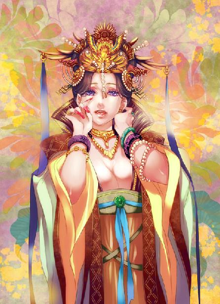
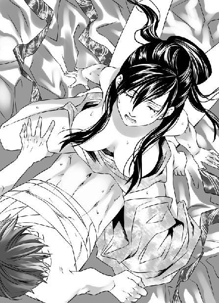
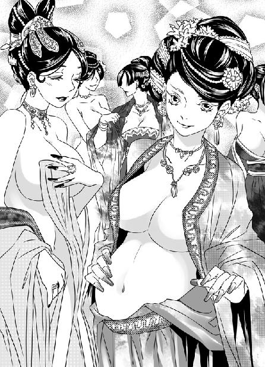

第17集·将计就计
建康篇（5/8）
出版日期：2010-12-10
【本集内容简介】
北府兵暗中入京，建康城风云将起，但萧遥逸却不看好临川王，而星月湖与黑魔海更是有不解之仇，程宗扬又该如何使用三寸不烂之舌，安抚“有种朝这儿砍”的小侯爷与自己身边的各方势力和平共处？
程宗扬布下连环计诈骗了苏妲己带入建康的所有家当，本只是想出口恶气，没想到却惹上夺命杀机，并牵累了从南荒带出来的兄弟。程宗扬这才惊觉，这刀光剑影的世界与过去完全不同，金钱权力不只是数字头衔，而是恶生生的杀伐！
※ ※ ※ ※ ※

封面人物：周妙芸

插图：卓云君

插图：晋宫群妃
阳光透过菩提树心形的叶片，洒落窗前。卧房内，一名垂着双鬟的侍女拿着一支紫竹箫，坐在榻脚轻轻吹奏。
穿着白罗衫的歌伎曼声唱道：“春林花多媚，春鸟意多哀。春风复多情，吹我罗裳开……”
歌声未绝，旁边的红衫歌伎展开歌喉，“阿那曜姿舞，逶迤唱新歌。翠衣发华洛，回情一见过。”
两女歌声参差起伏，婉转缠绵，有着说不尽的柔情蜜意。
一曲唱罢，张少煌眉飞色舞地说道：“怎么样？还听得入耳吧？”
从鹰愁峪回来后，众人念着程宗扬的伤势，先是遣人过来探望，送上礼物问候。听说他伤势好转，张少煌等人接着便登门拜访，还从怡情院带了两个最出色的歌伎，在程宗扬榻前献唱。
这份心意却之不恭，程宗扬只好装作无法起身的样子，趴在榻上听她们唱建康最流行的《子夜四时歌》。对自己来说歌词有点儿太不时尚，但两女的歌喉无可挑剔，伴着竹箫的幽幽清响，令人心旷神怡。
桓歆摇着扇子笑道：“石胖子，你们金谷园的歌妓名动一方，怎么不带来让程兄开开眼界。”
石超头摇得像拨浪鼓一样，“不成不成！她们唱的曲子都是清啊、玄啊的，咿咿呀呀没一点味道，连我都不爱听。”
桓歆合起扇子，在石超肩上敲了一记，揶揄道：“石少主品味不俗啊，连你们石家的曲子都听不入耳。石少主喜欢哪支曲子？说来听听。”
石超来了精神，“上次在金枝会馆听的两支曲子不错。”说着摇头晃脑哼了几声，大伙也没听出滋味来，只一笑置之。
程宗扬道：“徐家有没有动静？”
萧遥逸腰间悬着一只紫罗珠囊，意态闲适。他摆了摆手，让歌伎退下，然后嘻笑道：“徐家没什么动静，倒是谢二急了。那饭桶丢了虎符，还少了几百军士找不到下落，昨天已经上表请罪，辞官不干了。”
“辞官就行了？这么轻巧？”
“要不怎么？还能把谢二拉出来杀头不成？”
桓歆接口道：“谢二表递上去，宫里已经准了。军不可一日无将，我们原想会是庾家接任镇东将军，谁知诏书却指定了王驸马。”
张少煌在旁笑道：“诏书一下，王丞相就在宫城的大司马门前跪辞，拼死不敢奉诏。”
程宗扬趴在榻上道：“我听着怎么这么乱呢？”
“一点都不乱。”萧遥逸解释道：“驸马王处仲是丞相王茂弘的族兄，都出自琅琊王家。镇东将军这个位置，谢万石之前是徐老头，徐老头之前就是王处仲。当日王处仲组建州府兵讨贼平叛，大获全胜，结果有人说他拥兵自重，图谋不轨。王茂弘为人谨慎，亲自出面请王处仲辞了镇东将军，交出兵权，以此避祸。王处仲赋闲多年，现在重新领兵，王茂弘能放心吗？”
石超坐在一旁汗出如浆。临川王手下北府兵已经到了建康的事，众人都蒙在鼓里，他身为仅有的几个知情者之一，这会儿如坐针毡，紧闭着嘴一言不发。
程宗扬见张少煌与桓歆诡秘地相视一笑，问道：“你们打什么鬼主意呢？”
桓歆道：“就这么放过姓徐的，太便宜他了。”
“什么意思？你们找到他的下落了？”
张少煌笑道：“程兄不用理会，过些日子便知道了。”说着站起身，“程兄伤势未愈，咱们也不好多打扰，这便告辞吧。”
几人纷纷起身，向程宗扬告辞。
萧遥逸落后一步，小声道：“紫姑娘呢？”
程宗扬笑道：“这就要你帮忙了。萧五怎么样？能走得动吗？”
“他受了点内伤，起码两个月不能跟人动手，装装样子还成。”说着萧遥逸又问道：“紫姑娘到底是怎么回事？”
程宗扬约略说了几句，萧遥逸陡然色变，“怎么能让紫姑娘去犯险？”
“危险倒称不上。”程宗扬笑道：“你就放心吧，那丫头机灵着呢。萧五能装样子就行，一会儿我让会之过去见他。事成之后，我分你一半。”
萧遥逸道：“不要萧五出面，我去见她！”
“用不着吧。”程宗扬道：“有萧五就行了。”
萧遥逸肃容道：“紫姑娘若出了岔子，我死一万次都不够！这事还是我来出面，放心，坏不了你的事。”
程宗扬只好答应。萧遥逸临出门时又折回来，低声道：“那位临川王好谋无断，难成大事，程兄留心。”
程宗扬苦笑道：“你不怪我就好。”
萧遥逸叹了口气，“程兄是重义之人，小弟怎敢怪罪？但愿你别重义得把自己填进去就行。”
众人走后，程宗扬无奈地叹了口气。自己一点都不想趟晋国这漟浑水，却身不由己地陷了进去。
易彪带来的北府精锐六百多人，本来在东山隐蔽，但鹰愁峪之战露了行迹，无法再留在东山。这六百多人不是少数，徐度的手下还能借佛寺藏身，易彪露了行踪，想再躲藏就难了。
于情于理，此事都不容自己坐视不管。程宗扬当时就唤来吴三桂吩咐几句，这会儿易彪、林清浦和那些北府兵都在玄武湖，驻扎在岳帅留下的那处别墅中。
玄武湖紧邻宫城，对他们行事更为方便，但这事能瞒得了别人，瞒不过那只小狐狸。只怕易彪等人还没进入玄武湖，他便知道了。这番话是提醒自己，星月湖对临川王并不看好，劝自己不要把宝押在临川王身上。
程宗扬跳了起来，活动活动筋骨。肩胛处传来一阵痛意，毕竟是贯入伤，没那么容易痊愈。他叫来秦桧，“事情怎么样了？”
秦桧道：“都安排好了。云老爷子亲自选的人，据说是建康城口齿最刻薄的琴师。”
程宗扬嘿嘿一笑，然后道：“火候差不多了，准备收网！”
※ ※ ※ ※ ※
建康。长干里。
“啊……啊……”
房内传来女性淫媚的叫声，那声音又媚又腻，令人心荡神动。
一个男子急促地喘着气，淫声道：“我的心尖尖儿，你这身子可真——”
“噗”的一声闷响，男子的淫笑声戛然而止。
片刻后，一个慵懒的媚声道：“香蔻儿。”
香寇儿在门外听得面红耳赤，闻声连忙进去，垂首道：“夫人。”
苏妲己卧在软榻上，罗衫半褪，白腻的皮肤上渗出星星点点的汗水。一个男子赤身倒在地上，他头骨破裂，眼睛、口鼻、耳朵都淌出血来，脸上仍带着淫猥和惊惧混合的表情。
苏妲己拍了拍手，两名女侍卫拖走尸体，将榻前染血的绒毯换了一块。
苏妲己拉起衣衫，掩住裸露的双乳，若无其事地说道：“那丫头呢？”
“在和兰姑学曲子。”香蔻儿回复道：“兰姑说从来没见过这么好的嗓子，再难的音也能唱出来，比兰姑自己唱得还好。”
苏妲己露出一丝笑意，“不必急，让她慢慢学。等建康的醉月楼开张，再让她出去接客。”
“是。”
苏妲己神色转冷，“掳走祁远的人有消息了吗？”
香蔻儿道：“还没有。”
苏妲己冷笑道：“一家家给我找！我倒要看看是哪家织坊有这样大的胆子！竟然敢掳我的人！”
香蔻儿小声应了一声。祁远被掳的事让夫人恼怒之极，那几人身手极高，趁着大雨轻易掳走了人，还抢走几件织品，并且留下话，让外人滚出建康的织坊生意。
程宗扬如果知道真相应该额手称庆，秦桧这一招浑水摸鱼，把苏妲己骗得死死的，到现在还没有想到是他做的手脚，以为是建康的织坊商会掳人抢物。
苏妲己寒声道：“吩咐下去，两件事：一件是看好剩下的霓龙丝，做成的织品一件也不许外流！另一件，盯紧市面，看是谁在仿制霓龙丝衣！”苏妲己咬紧银牙，“敢叫我的盛银织坊滚出建康，好大的胆子！”
待苏妲己怒气渐平，香蔻儿才道：“回夫人，找的琴师已经到了。”
苏妲己弯眉挑起，露出一丝喜色，“取伯牙琴来。把那个丫头也叫过来。”说着又吩咐道：“小心些，莫碰坏了。”
香蔻儿领命取琴。苏妲己重新梳洗过，换了衣物，娉娉袅袅来到书房。
书房内，从建康最大的琴行鸿宝阁找来的琴师已经等得大不耐烦。那琴师六十多岁年纪，留着两络长须，看上去像个干瘦的糟老头子。他神情傲慢，见苏妲己出来也不施礼，只扬着脸道：“琴呢？老夫还有他事，莫耽误老夫工夫！”
苏妲己扶了扶鬓角的花簪，嫣然笑道：“先生莫急。香蔻儿！”
香蔻儿捧来锦袋包裹的伯牙琴，小心翼翼地放在案上。
那个叫小紫的姑娘被兰姑带着进来，俏生生立在一旁，看着案上伯牙琴露出古色斑斓的一角，弯长的睫毛眨了眨，美目蒙上一层水雾，神情凄婉。
苏妲己看在眼里，心下越发笃定。那个死奴才竟敢带了自己的人逃走，依自己原来的意思，抓到这个该死的逃奴，定要打断他双腿，把他囚在奴窟里，留他一条性命给自己的织坊描绘图样，已经是格外施恩。
没想到到了建康才发现，这个逃奴竟然混得风生水起，空手骗得几万金铢的身家。横塘的地契在云氏手中倒也罢了，居然一掷八千金铢买了张琴，还奉送了一个大有身份的绝色。
琴价高低苏妲己拿不准，但这个美婢在五原城也卖得几百金铢，换作建康，不啻千金之数。把这一琴一人拿到手，也出了自己一口恶气。如果真和那个秦管家说的一样，能卖到两万金铢，即便丢了横塘的土地，也不算要紧。
苏妲己娇声道：“先生请看，这张琴价值几何？”
那琴师眼角瞟都不瞟，高高扬着脸，先从鼻孔里哼了一声，然后傲态十足地说道：“索价几何？千金以下的琴，老夫从来不看！”
苏妲己恨不得掐死这个糟老头，只不过听说这糟老头在建康大是有名，一般的古琴经他品评立即身价倍增，这会儿也不好得罪，按捺着性子媚声轻笑道：“这张琴，是奴家用八千金铢买来的。”
听到八千金铢，琴师才略微转了转眼珠。看了看琴尾的龙龈、冠角，然后拨了拨雁足的琴弦。琴声铮然响起，十分好听。
琴师皱起眉，用枯瘦的手指挑开锦囊，一寸寸摩挲着古琴。他翻检虽然细致，动作却极快，手指犹如蜻蜓点水，在琴身的焦尾、承露、龙池、凤沼上一一抚过，还用小指挑起一片漆灰，然后弹开。
每看一处，琴师脸色就难看一分，最后他把那张伯牙琴一丢，不屑地拍了拍手，大笑道：“什么八千金铢！哈哈！”
苏妲己悚然一惊，“这张琴不妥吗？”
“何止不妥！”老琴师一脸讥讽地哂道：“此琴用的桐材不过是三年的新桐，在粪坑埋了几日沤旧，冒充陈年桐木。偏生还有人捧着当宝，哈哈！”
苏妲己脸上时红时白，半晌才道：“这琴身的流水纹和八宝灰呢？”
“八宝灰？”琴师挖苦道：“八宝灰是用金银珠玉珊瑚八宝调成，这琴用的不过是破絮败革，竟然也敢叫八宝灰？这流水断更是可笑，纹路散乱不堪，一看便是庸手所为！”
苏妲己仍不死心，忍怒道：“先生会不会看错了？这伯牙琴相传是伯牙亲手所弹，也许是年代久远，犹未可知。”
琴师像看怪物一样看着她，良久才从鼻孔里发出一声冷笑，“伯牙琴？伯牙一曲高山流水，千载知名，钟子期故后，伯牙以世间再无知音，破琴绝弦——此事三岁童子便知，哪里有什么琴流传下来？荒唐！”
琴师越说越怒，口气也越发不客气，“伯牙乃世间琴仙！何物竖子，敢唐突仙人！夫人虽然貌比芝兰，却如此浅薄，附庸风雅不成，乃以八千金购一粪坑秽木，奉若珍宝，可笑可笑！”
琴师用巾帕擦了擦抚过琴的手指，连巾帕也不要，嫌恶地丢在一旁，就那么扬长而去。
众人一句话都不敢说，只听着苏妲己的呼吸声越来越剧烈。
忽然“砰”的一声，那张伯牙琴被重重扔在地上，摔得粉碎。苏妲己气恼得肩头微微战栗，片刻才恨声道：“该死的狗奴才！”
她目光落在那少女身上，像泄愤般骂道：“下贱的小蹄子！什么淮南王的幼女！立刻让这小贱人去接客！”
兰姑面露难色，低声说道：“夫人莫非忘了，这丫头是个石女，只能唱唱曲子。”
“什么！”
兰姑看到苏妲己的脸色，连忙跪下来，“想是这小贱人撒谎。”
苏妲己冷着脸走到小紫身前，一手伸进她裙内。小紫怯生生道：“人家下面……真的没有呢。”
苏妲己心下恨极，拔出手，一个耳光朝小紫脸上挥去。
小紫“呀”的一声跌倒在地，她一手捂着脸，耳垂的坠子在玉颊上擦出一条细细血痕。
“都给我滚！”
苏妲己余怒未消，一名女侍卫进来，“夫人，有客人来访。”
苏妲己恨声道：“谁！哪个该死的奴才？”
“是那位姓秦的管家，还有一位公子。”
苏妲己想也不想便甩帘出来。
她最忌惮的王哲已死，便只剩最后一丝顾忌。为了解决这个伴随自己多年的隐患，苏妲己一个月前便从五原城动身，在竞州遇到祁远后，随即带着他贩回的霓龙丝一同赶赴建康，算起来只比程宗扬晚了几日。这一路她行踪极为隐秘，若不是因为那个欺主的恶奴，未必肯现身出面。没想到他竟能找到自己的住处，居然还有胆量登门。
苏妲己咬牙一笑，踏进客厅。
那位秦管家温文尔雅坐在一旁，见苏妲己出来，立刻跳起来，恭敬地施了一礼，“小的见过夫人。”说着扬起脸，满脸春风地微笑道：“那张伯牙琴不知夫人可满意吗？”
苏妲己笑眯眯道：“那样的稀世名琴，自然是满意了。告诉你家公子，难得他办事得力，今晚过来，妾身要好好赏赐予他。”
秦桧露出懊恼的神情，为难地说道：“夫人取琴时，小的曾说过，那张琴已经有人看过了，是吧？”
苏妲己含笑拿起茶盏，“怎么？有人看中了吗？”
秦桧先长叹一声，然后才道：“夫人莫怒，小的实言相告——那张琴其实已经有人买了的。公子只是不愿拂了夫人心意，才送来让夫人赏玩几日。”
苏妲己咬牙笑道：“竟然还有这样的傻瓜！”说着她想起一事，脸色陡然一变，厉声道：“你什么意思！”
秦桧顺从地垂着手，“夫人分文未取就拿了琴来，这会儿买琴的正主已经到了，那张琴——还请夫人赐还。”
苏妲己怔了片刻，然后猛地回过头，像看怪物一样看着旁边那个年轻公子。
那年轻人相貌俊雅、衣饰华贵，腰侧一只紫罗珠囊，隐约能看到“蘭陵”二字——兰陵萧氏是晋国有名的世家之一，苏妲己岂能不知。
那年轻人傲然道：“那个傻瓜就是我。”说着他嫌热似的扯开衣领，露出颈中一行刺青：有种朝这儿砍。
秦桧吓了一跳，扑通跪倒，哀求道：“小侯爷息怒！小的该死！谁不知道小侯爷轻易不露刺青，一露就要杀人！爷万金之躯，莫和小的一般见识！”
萧遥逸瞪着苏妲己，奋力一拍桌子，喝道：“琴呢？”
苏妲己脸色数变，最后勉强笑道：“原来是小侯爷。”
有道是强龙不压地头蛇，何况萧氏在建康堪称猛龙，跺一脚地面都要动三动的人物。只要自己人在建康，无论如何也得罪不起。
萧遥逸露出恶少的嘴脸，蛮横地说道：“识相的赶快把琴给我拿出来！不然我就拆了你这座破院子！”
苏妲己压下心底的滔天怒意，含笑道：“小侯爷，你上当啦。那琴其实分文不值……”
没等她说完，萧遥逸就叫道：“你算什么东西！爷用了两万金铢买的琴，你竟敢说分文不值！”
苏妲己失声道：“两万金铢！”
秦桧把头垂得更低，恭顺地说道：“那钱我们公子已经用了，说好今日把琴送到小侯爷府上。还请夫人赐还。”
苏妲己明白过来。自己掉进那个死奴才精心编织的陷阱里，那张伯牙琴已经被自己摔碎，即使拿出残骸，这一脸斯文的无耻刁奴也可矢口否认。要拿琴——自己着实是拿不出来了。
萧遥逸颈中青筋暴跳，怒虎般拍案叫道：“还有人敢跟爷抢琴！没听说过建康十虎的名声吗？”
苏妲己迅速权衡利弊，神情一冷，“小侯爷，凡事都有先来后到。小侯爷虽然付了钱，但这张琴是妾身先拿到手，自然该归妾身所有。小侯爷名震建康，不会是蛮不讲理之人吧？”
萧遥逸摸着颈中的刺青，恶狠狠龇牙一笑，“少跟爷废话！今天不拿钱来，爷跟你没完！”然后吩咐随从道：“叫建康城的差人过来！再调一营禁军，拿琴不给钱，还有王法没有！”
秦桧连忙劝道：“小侯爷息怒，苏夫人一向明白事理，这琴是小侯爷花两万金铢买的，夫人既然有意留琴，便原款奉还如何？”
苏妲己怒极反笑，“你让我出两万金铢？”
“放屁！”萧遥逸毫不客气地啐了秦桧一脸，“狗奴才！爷两万金铢买的，再两万金铢卖出去？这笔钱爷搬进搬出好玩吗？她想要琴，至少给我拿四万金铢出来！”
几名萧府的恶仆冲进厅内，鼓噪道：“谁敢抢我们小侯爷的东西！把这贼人送官！打她一顿板子就老实了！”
看着秦桧充好人在中间苦苦劝说，苏妲己眼前阵阵发黑。贼咬一口，入骨三分。姓程的死奴才真是卑鄙到骨子里了！
秦桧好说歹说，萧遥逸终于气咻咻把价钱降到三万金铢。建康城的差吏早在外面等候，这会儿提枷带锁地进来，向小侯爷磕头问安，眼看一语不合，就要拿自己入狱。
苏妲己这会儿是以白湖商馆掌柜的身份出现，再强也不敢当着官府差人的面公然动手。此时进退无路，只好放软身段，楚楚可怜地说道：“小侯爷，借一步说话如何？”
身边差吏、打手齐全，萧遥逸也不怕她玩什么手段，哼了一声，跟着苏妲己来到侧室。
苏妲己亲手奉了盏茶递给萧遥逸，忽然屈膝跪下，珠泪滚滚地泣声道：“小侯爷，请你高抬贵手，妾身真的没有那么多钱。”
眼见这妖妇走投无路，一张狐媚的玉脸哭得梨花带雨，萧遥逸暗想：这一幕要让程小子看到，不知道该有多快意。
萧遥逸把眼睛翻到额头上，冷哼道：“夫人家大业大，难道连三万金铢都拿不出来？”
苏妲己来建康原本是准备营建醉月楼，自然不好得罪这些世家权贵，但三万金铢已经超过她的承受能力，闻言只能摇头哀求。
来讨账前，程宗扬已经做过估算：苏妲己带来的现钱不会超过两万金铢，在建康又置地购业，最多还剩下一万五千金铢。
萧遥逸一口咬定三万金铢，任苏妲己苦苦哀求，最后要了一万五千金铢的现款，盛银织坊和苏妲己住的宅院一并作价五千金铢，还差了一万金铢。苏妲己咬了咬牙，“妾身还有十二个歌舞美姬，以此抵价如何？”
萧遥逸嗤之以鼻，“你手里那些粉头，一万金铢我能买一百个！”
建康物价高昂，又禁止公开的人口交易，一个上等美妓在五原城以五十个金铢就能买到，在建康城至少翻上十倍。这十二个歌舞妓都是苏妲己精挑细选出来的，最后给了一个公道的价格，算六千金铢。还剩四千，这会儿无论如何也凑不出来。
萧遥逸道：“刚才奉茶那个小婢呢？算她一百金铢。别的还有七八个女人，加起来算一千金铢好了。”
香蔻儿是苏妲己的贴身小婢，至于萧遥逸说的其他女子，都是苏妲己身边的女侍卫，她无论如何也不肯卖。
苏妲己眼前忽然一亮，“妾身还有一个女奴，是穹羽族的女子，卖琴的程公子也认识。一等一的容貌，作价一千金铢给小侯爷如何？”
要的就是这个！萧遥逸不动声色，“哪里值一千金铢？最多五百！”
苏妲己唇角露出一丝冷笑，“还有一个小婢，堪称千金难买的绝色。小侯爷不若买回去侍候床铺。”
萧遥逸半推半就地说道：“莫非是那个捧琴的小婢？一千金铢未免贵了些……”他淫笑着摸了摸苏妲己尖尖的下巴，“不若你再陪本侯爷一晚，大家便两清了。”
苏妲己险些咬碎银牙，自己此行的财物已经被敲榨得干干净净，他却仍不肯放过自己。
苏妲己勉强笑道：“小侯爷说笑了。”
萧遥逸哼了一声，冷起脸道：“这房子已经姓萧了，你还不快滚！”
※ ※ ※ ※ ※
秦桧出来笑道：“公子，小侯爷有请。”
程宗扬已在外面等候良久，眼看苏妲己带着几个女子离开，不禁心花怒放，仰天大笑几声，这才下了车，施施然登堂入室。
萧遥逸坐在椅上，色眯眯看着堂中十二名美貌的歌舞姬，一边笑道：“程兄好手段，刚才兰姑说，这些都是没接过客的清倌人。那妖妇本来想一举打响醉月楼的名头，没想到都便宜了程兄。”
“兰姑？”程宗扬扭头看去。
那中年美妇诧异地看了他一眼，然后连忙跪下，“原来是程爷，奴婢见过主子！主子吉祥！”
自己在五原城曾去过一趟醉月楼，见过这个妇人，讶道：“你不是在五原城的醉月楼吗？怎么到了这里？”
兰姑赔笑道：“夫人要在建康新开醉月楼，让奴婢挑选粉头，前来打理。”
程宗扬笑道：“楼里两个姑娘，叫清儿、梅儿的，还好吗？”
“劳烦主子挂念，都好。”
“西门大官人呢？”
兰姑笑道：“大官人前些日子出门做生意了。离开之前来过楼里，因为没有子息，还好一番长吁短叹。”
西门庆比自己大不少，在这个时代没有儿子可是件大事，难怪他要叹气。不过话说回来，整天逛窑子，还有多少种子往家里播，实在很可疑。
萧遥逸笑道：“圣人兄，这些美姬可都是你的了，今晚……”
小紫抢道：“都给你好了。程头儿才不喜欢呢。”
程宗扬心里叫道：喜欢！怎么不喜欢！
没等他开口，萧遥逸已经接口道：“既然如此，我就不客气了。”
死丫头！小狐狸！你们太过分了！我宁死也不能便宜你这只小狐狸！
程宗扬咳了一声，正容道：“这些姑娘都是好人家的女儿，因为家里穷，或是受人所骗，才到了此地。但凡有点良心，怎么能忍心看着她们身陷火坑！这种卑劣之事，我程宗扬做不出来，也不允许旁人去做！”
程宗扬得意地看了萧遥逸一眼，说道：“这样吧，你们家里还有人、愿意回去的，每人给二十贯，我派人送你们回去。”
小紫笑逐颜开，萧遥逸呆若木鸡，良久才伸出大拇指，“圣人兄，你狠！”
程宗扬道：“织坊和这院子归我，金铢给你一万，怎么样？”
“金铢就免了吧。”萧遥逸贴在他耳边道：“就算我给紫姑娘的嫁妆。”
程宗扬脸上笑容不改，小声道：“你赶紧找个人让她嫁了才是正经。”
兰姑有些局促地看着自己。程宗扬道：“你若家里没人，想留在这里，尽管留下来吧。”
兰姑松了口气，俯身道：“多谢主子。”
那些歌舞姬喜极而泣，愿意回去的拿了铢钱，由秦桧联系车马行送她们返乡。还剩两个因为无家可归，也和兰姑一道留下。
等程宗扬安排完，萧遥逸道：“我回去看看萧五。你放心，我派人盯着那妖妇，等她离开建康再说。”
萧遥逸离开后，秦桧捧着一盘银铢过来。程宗扬道：“这是做什么？”
秦桧笑道：“这是那位琴师还有差吏们的赏钱。辛苦他们一趟，多少要表示些心意。”
程宗扬想起来，“那位褚从事来了吗？”
“褚从事半路被人叫走，传话向小侯爷告罪。”
程宗扬道：“我去织坊看看。”
秦桧笑道：“小侯爷怕那妖妇取走财物，已经先让人封了织坊。”
“好小子，算计这么周到。”
秦桧道：“长伯还没有回来，我和公子一起去。”
“不用了。”苏妲己一走，程宗扬心头少了块大石，顿时一阵轻松，“你把这边打理一下。喂，死丫头，你还在这儿待着干嘛？”
程宗扬与小紫一同上了马车，想起苏妲己像斗败的公鸡一样，带着香蔻儿和那几名女侍卫空手离开，不禁心头狂笑，忍不住抱着小紫狠狠亲了一口，“死丫头，真有你的！”
小紫脸上微微一红，嗔道：“讨厌！不要碰人家！”
程宗扬怪叫道：“殇侯可是说过让你给我暖床的。只亲一口有什么大不了的？”
“不要吵。”小紫摘下耳垂上的坠子。
程宗扬看了看她精致的脸颊，不由一惊，“你受伤了？”
“没有啦。”小紫举起坠子，“是她的血。”
程宗扬这才注意到坠子上有一根细若蚊须的短针。苏妲己打小紫耳光时，手掌边缘被细针刺中，淌出血来，但感觉像被蚊子叮了一口，连她自己也没有察觉到异状。
“喂，你把她的血弄来做什么？”
小紫笑嘻嘻道：“可以做很多事啊。比如我把它封在施过术的琥珀里，她在周围一里出现，就能感应到。”
“看你和那头小狐狸笑得一模一样，不止吧？”
“我才不要和他一样。”小紫道：“还可以放在娃娃身上……”
程宗扬点了点头，“够毒！”
“只是让她每天晚上做恶梦啦。”
小紫拿出一块澄黄的琥珀，把坠子上些微的血迹点在上面。那滴细小的血迹随即渗入琥珀，像一颗血红的星辰般，被封在琥珀内部。
程宗扬拿过来，只觉琥珀微微发热，想来是苏妲己还没有走远的缘故。程宗扬啧啧两声，“死丫头，你在殇侯那儿都学了些什么鬼东西？”
小紫腻声道：“人家还学了好多床上功夫。程头儿，想试试吗？”
程宗扬气哼哼道：“死丫头，你等着！”
程宗扬毫不客气地将琥珀揣进口袋，忽然听到外面一阵喧哗。
这时马车已经行至秦淮河边，程宗扬拉起车帘，隔着淡绿的玻璃，看到不远处的宅院前围着一群闲汉，几名差吏在院内进进出出，里面一个似乎是建康主管刑案的从事褚衡。
穿着皂衣的差吏驱赶开周围的闲人，一面将院门刷上白灰。程宗扬知道这是建康的习俗，出了凶杀案的宅院都要刷白灰破煞——难道这里又出了什么命案？
程宗扬跳下马车，“褚从事。”
褚衡回头见是程宗扬，客气地拱拱手，“程少主。”
程宗扬笑着握住褚衡的手腕，顺势把一串银铢塞到他袖中，拉着他的手摇了摇，“今日之事有劳褚从事了。”
褚衡是从六品，每年俸禄五百石，折算下来月俸合三四十个银铢，这时袖中一沉，便估出数量不低于自己的月俸。虽然他不见得在意这些钱，但程宗扬出手大方，不禁心生好感，说道：“程少主太客气了。在下无功受禄，惭愧。”
程宗扬朝院中看了看，“出了什么案子吗？”
褚衡苦笑道：“一桩大案，全家十几口被人杀得干干净净。若破不了案，小的只怕职位不保。”
“灭门？这是谁家？”
褚衡压低声音道：“徐司空的公子。”
程宗扬心头“咯噔”一声，“徐敖？他没有和司空大人一起住？”
“徐公子到建康就搬了出来，”褚衡摇了摇头，“没想到会遇到这种事。”
程宗扬心里怦怦直跳，说道：“我和徐公子有一面之交，能进去看看吗？”
晋国差吏办案不怎么严谨，至少褚衡没放在心上。他答应一声，便领着程宗扬进了院子。
一进门便看到几条恶狗死在院中，狗颈插着弩箭，看来是被人近距离用弩射杀。
褚衡道：“下手的不止一人，单是脚印就看到十几个。时间大概是昨晚子时前后，宅里七名仆人死在房内，都是睡梦中被人一箭毙命。”
“徐敖呢？”
“没有见到徐公子的遗骸，清点尸首时还发现少了几名护卫。”褚衡道：“派去司空府报信的人还没有回来，不知那些护卫是随徐公子出门在外，还是恶仆勾结外贼，里应外合。”
程宗扬心知肚明，失踪的几个护卫多半是徐敖的心腹，随主人一同去了鹰愁峪，这种情况下已经不可能再回来。
褚衡领着程宗扬到了内院，一手掩着鼻子，指了指正中的卧房，低声说道：“死人最多的就是这里了。”
房屋已经被差吏检查过，门前洒着白灰，卷起的竹帘被放了下来，房内散发出浓浓的血腥气。
“这是徐府少夫人的卧房。”褚衡低声道：“徐公子的一妻两妾，还有几名婢女都死在房内。”
褚衡面露不忍，“不知那些贼人与徐少爷有何深仇大恨，三具尸体没有一具完整的，尤其是徐家的少夫人……”说着他摇了摇头。
程宗扬心头狂震，已经隐约猜到是谁动的手。只是没有想到他们反应这么迅速，又这么暴烈，竟然把徐敖一家灭了门。
褚衡叹道：“这周围住户不多，竟没人听到动静，直到中午时分才有人发现，往官府报案。”他掀起竹帘，“程少主要不要进来看看？”
程宗扬心头突突直跳，空气中的血腥气虽浓，死亡的气息却淡不可辨，显然屋内的人已经气绝多时。他回绝道：“不进去了。”
褚衡放下竹帘，点了点头，“死者已殁，程少主不要多伤感了。说不定贵友徐少主吉人天相，能逃过此劫。”
忽然，竹帘一动，一个苗条的身影从里面出来。
那女子穿着一身乌黑的捕快服色，但与建康普通差吏的服色不同，她衣角镶着朱红色边沿，腰带系着一块铜牌。为了便于行动，衣服下摆很短，敞开的衣摆间，露出两条穿着白绸长裤的修长美腿。她戴着一顶精巧的斗笠，耳下一幅淡青色的面纱遮住面孔，笠下美眸冷冰冰没有丝毫表情。
程宗扬还没见过穿着官差服色的女子，看到她面纱一角绣的黑色小剑，不禁一愕。褚衡却神态恭敬，抱拳道：“泉捕头。”
“仵作呢？”
那女子语调略显生硬，吐字时舌尖卷起，有种奇特的韵味。
“仵作已经看过了。”褚衡不敢怠慢，回复道：“房内共有尸七具，俱为女子。现已经查明，四具为婢女，其中三婢喉中有伤深一寸七分，系割喉至死；另一小婢衣衫零乱，喉间有青黑色指痕，下体有精流出，系被人奸淫时扼喉至死。另外三具为徐府少夫人及两妾，皆身无寸缕。两妾卧于榻上，四肢、颈、腹、阴门俱有伤。少夫人被缚在梁间，身体悬空，遍体鳞伤，系被人轮番奸淫后吊起虐杀，辰时前后方才气绝。”
“子时到辰时近五个时辰，为何周围无人察觉？”
褚衡道：“可能是此地离河甚近，周围人家稀少。”
那女子摊开手，白红掌心放着一枚黑黝黝的钉子。
那些钉子看起来很原始，通体呈四棱的锥形，做工粗糙。程宗扬心里嘀咕：几枚钉子有什么大不了的？
褚衡却神情一震，“这是哪里来的？”
“榻侧落了一枚。”那女子冷冷道：“建康的刑案差吏怎么如此粗疏？”
褚衡汗颜道：“泉捕头教训的是。在下立刻让人清查周围的马蹄印迹和铁器坊。”
那女子问道：“被吊起的女尸是怎么死的？”
褚衡振作精神，“少夫人周身有伤四十余处，在下推测，也许是贼人拷掠寻求财物所致。致命伤应在两乳的刀伤。”
那女子一双妙目停在褚衡身上，良久道：“建康的差吏太令我失望了。那女子脐下微有血出，分明是生前被人用锐物从阴门刺入致死。那锐物长三尺四寸，略呈弧形。立刻去查找类似的器具。”
说罢那女子按下斗笠，闪身离开内院，从头至尾都没看程宗扬一眼。
程宗扬呼了口气，“这女的是谁？”
褚衡老脸发红，苦笑道：“泉玉姬。长安六扇门的两名女捕头之一。”
褚衡身为从六品从事，属于办理刑案的高官，此际被那女子一番抨击，却没敢还口半句。程宗扬不解地问道：“我还没见过女人当官，她们怎么也能当捕快？还有，长安不是在唐国吗？怎么能管到你们晋国来？”
“长安六扇门是六朝捕快的总部，泉捕头是长安六扇门刻意栽培的高手，年纪轻轻就破了几桩大案，当上捕头。”褚衡道：“她这还算客气的，换作别的几位捕头大爷，骂得狗血淋头我们也只有听着。说到底还是小的无能，丢了晋国差吏的脸面。”
“既然是总部，怎么不设在洛阳？”
褚衡知道他来自荒僻之地，也不以为意，笑道：“洛阳是天子治下，在尚书台设了二千石曹主管天下刑狱就够了。六朝只有唐国和宋国设有刑部，像办案这种不入流的细务，当然是我们这些小的来干了。”
褚衡叹道：“若不是泉捕头慧眼，差点漏过这条线索。那些贼人把徐府的妻妾从各房掳来，又钉死门窗，然后下手，明显是有备而来，目的绝不是勒索财物。”
“程少主，”褚衡歉然道：“小的要到房内看看，就不陪少主了。”
※ ※ ※ ※ ※
回到车上，程宗扬神情立刻冷峻下来。
灭门的凶手是桓歆那帮恶少无疑，连刺死徐府少夫人的凶器自己也能猜到八九分——萧遥逸手里的龙牙锥！
这些恶少报复起来有够狠毒，知道徐敖避祸在外，竟然把他一家杀绝，不留丝毫退路。
“大笨瓜，”小紫嘲笑道：“你又叹气了。”
“唉……”程宗扬长叹一声，“这帮人也太狠了。有仇报仇就是了，何必连无辜的人也杀。”
小紫撇了撇嘴，“如果姓徐的赢了，才不会跟你客气。雁儿、莺儿她们肯定要被斩首，说不定连我也要被他们杀头。”
“杀你？你在说梦话吧？姓萧的小狐狸都没你坏心眼儿多。这世上谁要能杀了你，我立刻给他磕头叫师父！”
小紫踢了他一脚。程宗扬揉腿琢磨片刻，然后道：“不行，我要找那只小狐狸。他用龙牙锥是什么意思？想害我也不用这么早下手吧？”
“安啦。”小紫道：“谁都知道你把龙牙锥送给了王处仲。他这么做，是看琅琊王家置身事外不顺眼，想把他们也扯进来。王处仲本来就因为镇东将军的位子和徐老头有芥蒂，现在又成了徐老头的杀子凶嫌，最好是他自己拒诏，辞了镇东将军，让小狐狸他们的人坐上。”
程宗扬听得频频点头，“死丫头，门儿清啊。你是不是跟小狐狸聊过？”
“没有啊。”小紫眨了眨眼，“人家只是看萧哥哥脖子上的刺青好好玩，也想刺一个。”
“太好了！你就差在脸上刺个字，明说‘我是奸的’，免得整天拿这张脸骗人。”
小紫依到程宗扬怀中，腻声道：“程头儿，人家的脸好不好看？”
程宗扬拧起眉，俯在小紫耳边，压低声音道：“别用这种腔调说话！一听见这声音我就阴囊发紧，也太腻了，骡子听见都得撒尿……”
“哎哟！你个死丫头！”
程宗扬一声惨叫，被小紫在肩上狠狠咬了一口。
※ ※ ※ ※ ※
“你猜的没错。”
“哗”的一声，萧遥逸潇洒地甩开折扇，从容笑道：“我就是想朝王家头上泼污水。”
萧遥逸道：“程兄还不知道吧？现在建康城已经传开了，说琅琊王家的驸马爷杀了徐司空儿子一家，证据嘛……世间哪儿还有第二支龙牙锥？”
程宗扬皱起眉，“他跟你有仇？”
“仇是没有的。不过……琅琊王家也就王处仲是个人物。那厮城府极深，连我都摸不透。先烧把火，让他焦头烂额也不错。”
程宗扬沉默了一会儿，埋怨道：“你下手也太狠了吧？”
“谁说我下的手？”萧遥逸叫屈道：“我只是出了主意，把龙牙锥借他们用用。下手的是桓老三和张侯爷。说实话，他们做得这么绝，我也很佩服。”
程宗扬触摸到这些世家子弟的另一面，他们出身显赫，一生下来就是贵族，视普通人的性命如同草芥。石胖子是这样，桓歆、张少煌是这样，连萧遥逸也一样。他们眼都不眨地灭掉徐敖满门，只为出一口气。想说服他们把别人的性命看得和他们自己一样，比登天还难。
“圣人兄？”
程宗扬苦笑一声，“我也管不了那么多，但愿别因为我害死人就好。”
“圣人兄多虑了。”萧遥逸安慰道：“徐敖敢谋逆，灭族是迟早的事，这些人只不过早死几日而已。”
话虽然这么说，程宗扬心里却不舒服。他站起身，“主管刑狱的办案人在现场找到一枚钉子，你们小心一点，别露出马脚被人抓到。”
萧遥逸神情一紧，“什么钉子？”
程宗扬回忆道：“四棱锥形，长不到两寸。”
萧遥逸脸色难看下来，“这群饭桶！”
程宗扬道：“钉子遍地都是，他们能查出什么来？”
萧遥逸道：“钉子用处并不多。除了造船用的长钉，就是钉马掌的钉子了。他们既然找到这枚钉子，查出造钉的作坊并不难……妈的，谁这么精细？”
萧遥逸一说，程宗扬才想起来，晋国确实很少使用钉子。大到楼宇，小到家具都是榫卯结构，难怪他们一看就知道是马掌钉。
“是长安来的一个女捕头。”
萧遥逸神情顿时松懈下来，笑嘻嘻道：“是泉玉姬泉捕头吧？你放心，她来建康是追其他案子，不会在本地刑案上费多少工夫。”
程宗扬转身要走，又被萧遥逸拉住，“程兄别急啊，还有桩大事要和程兄商量。”
程宗扬冷着脸道：“灭门的事就别找我了。”
萧遥逸重新换过茶，“现在多半可以断定，找人刺杀我的是徐敖那小子。程兄猜猜，那小子会躲到哪里？”
“他既然手里有虎符，宫中肯定有他的内应。我敢赌一万金铢，那小子藏在宫里。”
萧遥逸抚掌道：“英雄所见略同！程兄——”
“我干！一看你笑的淫贱样子就没好事！”
萧遥逸哈哈大笑，“知我者，程兄也！我也不废话了，今晚到宫中一游，程兄可有兴趣？”
“没有！”
萧遥逸一脸坏笑地低声道：“都说张侯爷的姐姐张贵妃千娇百媚、美艳绝伦，让陛下爱如珍宝，程兄不想瞧瞧？”
程宗扬皱眉道：“你是到宫里查找真相呢，还是准备去偷香窃玉呢？”
萧遥逸讶道：“这两件事有必要分开吗？查找真相也不耽误咱们兄弟偷香窃玉吧？”
程宗扬没好气地说道：“少来‘咱们兄弟’！是你！”说着他想起一件事，“丽娘和芸娘有消息吗？”
萧遥逸摇了摇头。
程宗扬心头微紧，这对美妓数日来音讯皆无，不知道是不是被人灭了口。
“今晚不行，石胖子车马都备好了，要请我到金谷园散心。”说着程宗扬晃了晃手臂，“都是你害我中了一槊，再怎么也要两三天时间才能下水。”
“程兄伤势好得很快啊。那好，”萧遥逸从善如流地说道：“我就再等两三天吧。”
※ ※ ※ ※ ※
程宗扬知道推动云氏与临川王联手的是云家五爷云栖峰，这会儿双方正在玄武湖密谈。自己极不愿参与此事，有心避开，因此石超开口邀请，便痛快地答应。
石府的管家谷安是个竹竿一样的瘦子，与石超胖大的体型相映成趣。他在玉鸡巷已经等了两个时辰，程宗扬一回来，当即带着车马，载了程宗扬、吴战威二人一路向南过了朱雀桥，然后西行。
过了人烟稠密的横塘，马车驶出建康，远远看到一片大湖在夕阳下波光粼粼。
谷安在车旁指点道：“程爷第一次来建康，可能不晓得，那是莫愁湖。以前秦淮河是从莫愁湖入江，后来淤塞改道，这里就成了个大湖，方圆比玄武湖也小不了多少。”
莫愁湖是六朝名湖，自己以前也听说过。远远望去，湖上烟波浩渺，比玄武湖更多了几分静谧的美感。
程宗扬笑道：“你既然是石府的管家，怎么还用原来的姓？”
谷安笑道：“程爷明鉴，石家的规矩，下人们不能用主子的姓氏，免得有猾奴冒充主家，侵夺财产。我们金谷石家的下人，都是用金、谷两个姓。”
程宗扬点了点头。莫愁湖极大，虽然只从一角穿过，也用了近半个时辰。
谷安道：“那边是四望山，山下便是金谷园了。传说四望山是仙人所居，老爷把园子建在山下，也是想沾点仙气。”
吴战威在车里坐得不耐烦，跨上匹马和石府的护卫前后奔驰，马踏秋风，兴高采烈。管家谷安甚是健谈，一路说笑也不觉烦闷。
到了园门前，石超已经乘辇在门前等候。他吃力地翻下座辇，满面春风地迎过来道：“程哥！程哥！可把你等来了！”
程宗扬下了马车，笑道：“依山傍湖，你们石家选的好风水。”
石超一张胖脸笑得眼睛都看不到，“这地方太静，一点都不及城里热闹。依我的意思，还不及在金钱豹请哥哥快活呢。”
程宗扬哈哈大笑。来前萧遥逸已经提醒自己，石超虽然是少主，但他老爹两年前就中风不能说话，现在只剩一口气吊着，整个人已经死了一大半，石家的事都由石超做主。当下也不多问，和石超并肩进了园门。
一向只听说金谷石家富可敌国，进了园子，自己才知道石家有多富。
山脚下，清一色的白墙灰瓦连绵不绝，将半个四望山都围在园内，方圆足有几十里。园内依着山势起伏，高处筑有楼台亭阁，低处凿池开湖。一条两丈宽的河流从山间流下，玉带般穿园而过。园内种着大片大片的桃林、柳林，无数花树穿插其中，风起时万花飞舞，流莺四起，风光旖旎，如同人间仙境。
园内还有一道围墙，谷安等人到了门前便止步不前，另有仆妇过来迎接。程宗扬知道这是内宅，一般人家都是外宅待客，从不带人进入内宅。石超这是不把自己当外人了。
石超道：“程哥，咱们去象牙亭怎么样？”
程宗扬笑道：“你自己家还来问我？”
石超“嘿嘿”笑了两声，吩咐道：“那便去象牙亭。”
内院来来往往的尽是女子，外面成群的仆人、护卫，这里一个都看不见。路旁的房舍、园落越来越精致，许多都镶着珍珠、琥珀、玛瑙，看起来比宫里还要豪奢。路旁的女子打扮也越来越华贵，一个个锦带丝履、头戴珠翠，模样更是一个比一个标致。
程宗扬还好点，把这当成选美大赛的现场也能接受。吴战威眼睛都不知道该往哪儿放，只寸步不离地紧跟着主子。
因为程宗扬不愿乘辇，石超也只好走路陪着，虽然有侍姬扶携，还是走得气喘吁吁，大汗淋漓。好不容易到了一处园子，几个侍姬迎上来，一同扶住石超。
亭内已经设了锦茵，石超像滩泥一样倒在席上，一边让侍姬抹汗打扇，一边喘着气道：“哥哥……坐……”
程宗扬和吴战威谁都没坐，两人都扬起头，张大嘴巴看着那亭子。
金谷园的象牙亭依水而建，整座亭盖用一整块碧玉雕成，最薄的地方厚不盈寸。透过亭盖，能看见天际云卷云舒。阳光浸过碧玉，变成翠绿的颜色，宛如一池碧水浸在身上，令人凉意四起。支撑亭盖的柱子是六根长及丈许的象牙，上面包着金箔，精心雕刻着花卉禽鸟，柱底用黄金铸成台基。
石超道：“这亭子倒也罢了，就是这六根象牙一般长短，着实难得。程哥要是喜欢，我立刻让人拆了，送到程哥府上。”
“免了。”程宗扬道：“这亭子要放我家里，我觉都睡不着，整天得抱着它睡才安心！”
石超哈哈大笑，侍姬送上瓜果，又捧来冰盆。程宗扬见盆里冰块也雕成假山形状，不禁暗自摇头。以前听说过把蜡雕成百兽当柴烧的豪奢，没想到让自己亲眼目睹了一回。
程宗扬坐下来，吃了颗冰湃过的李子，说道：“不是说你们石家的歌姬最出色吗？”
石超吩咐几句，一名侍姬捧着琴过来。那琴古色古香，一看就是真品，比自己的假货高明得多。
那侍姬拨了几下琴弦，指下流水般淌出一串清越的声音。
程宗扬没来由地想起“凤尾森森”这个词，只觉一股幽凉寒意涌上心头，纷乱的心情渐渐平复下来。
一个穿着朱红罗裙的丽人盈盈走来，倚着象牙柱，婉声唱道：“繁华事散逐香尘，流水无情草自春。日暮东风怨啼鸟，落花犹似坠楼人……”
歌声袅袅飘入云端，余韵久久末绝。
程宗扬依稀听过歌词，尤其是“落花犹似坠楼人”一句尤为耳熟，这会儿品味词中意蕴，一时有些发呆。
石超以为他听得不高兴，连忙道：“该死的奴婢！好端端的唱这些！换个艳致的。”
那丽人应了一声，然后含笑重启歌喉，柔声唱道：“玉炉冰簟鸳鸯锦，粉融香汗流山枕。窗外辘轳声，敛眉含笑惊……柳荫烟漠漠，低鬓蝉钗落。须作一生拼，尽君今日欢。”
石超不好意思地说道：“这些娘儿们学的都是以前的曲子，没滋没味的。改日到金枝会馆，我请哥哥听那里的山歌，才好听呢。”
程宗扬出了片刻神，举盏道：“唱得很好，真的很好。我敬你一杯。”
那歌姬俯身道：“多谢程少主。”
石超脸上有光，不禁笑逐颜开，“再唱一首！再唱一首！”
和石超在一起，最大的好处就是不费心。一边与石超推杯换盏，一边听着丽人美妙的歌声，程宗扬渐渐觉得满腹的烦心事都变得无足轻重。
不知不觉已是红日西沉，石超早已喝得肉山倾颓，烂泥般趴在席间。程宗扬也觉得酒意上涌，脑中一阵阵发昏，勉强起身道：“我去方便一下……”
两名侍姬过来扶他离席，程宗扬扭头时，却没有见到吴战威。
石家的厕所也极为精致，净桶内盖着一层沉香屑，气息香馥得如同闺房，好在没有看到塞鼻的干枣。两名侍姬要替他更衣，程宗扬正要答应，忽然心头一阵悸动，颈后仿佛掠过一股寒意，汗毛都竖了起来。
“公子……”侍姬在旁轻声唤道。
不知道是不是酒喝多了，程宗扬吸了口气稳住心神，然后摒开两女。坐在檀香木制成的马桶上歇了片刻，起身用凉水洗了把脸，多少清醒了一些，想起刚才的心悸，他不禁莫名其妙。
程宗扬推门出来，那两名侍姬已经芳踪杳然，周围帷幕低垂，辨不出哪里是来时的路径。
好在园子并不大，左右都能找到那座象牙亭。程宗扬随便捡了个方向，一路只见珠玉满目，真不知石家这座园子花费了多少钱财。
忽然帷幕后传来女子柔媚的低叫，听起来像是一男一女正在交欢。程宗扬本能地想要避开，紧接着想起一件事，不由疑惑地停下脚步——内院除了石超，就自己这个客人，怎么还有其他男人？
程宗扬顿时酒醒了一半，压着嗓子寒声道：“吴大刀！”
里面的声音一停，接着传来穿衣的声音。片刻后，吴战威衣衫不整、脸色通红地拉开帷幕，尴尬地说道：“程头儿……”
程宗扬朝里面看了一眼，那女子蜷缩在一条薄薄的锦衾内，容貌姝丽，依稀是刚才那个歌姬。
程宗扬又气又恼，低声道：“我干！这种事你都做得出来？咱们是来做客的，你跑来勾搭石胖子的侍姬，让他撞见还要不要脸面？”
吴战威老脸涨得通红，期期艾艾地说不出话来。
那歌姬忽然掀开锦衾，从榻上下来，赤裸着白生生的身子跪在程宗扬面前，“是我勾引他的，程爷要责怪，就责怪我吧。”
程宗扬牙痛似的抽了口凉气，“你傻啊！你们石少主杀个侍姬比杀鸡还容易，要让他知道，你就不怕死吗？”
“死了也比这里干净。”那丽人咬了咬唇，扬起脸，“我们以前是老爷的侍姬，老爷中风后，少主就把我们都用了。喜欢的留下，不喜欢的或是打死，或是卖人。我不怕丑，今日见着程爷和吴爷，我就铁了心要跟两位爷。程爷是主子，心地又正，奴婢高攀不上。”
她视线落在吴战威身上，眉梢眼角毫不掩饰地洋溢出喜悦，低声道：“奴婢虽然只见过吴爷一次，但能看出吴爷是铁铮铮的男儿。比起那些涂脂抹粉的公子……吴爷才是男人。”
吴战威红着脸也要跪，程宗扬没好气地说：“什么意思？你让我也跪着跟你说话才舒服？滚起来吧。”
吴战威讪然起身，拿起锦衾帮那丽人掩住身体。
程宗扬松了口气，对那丽人说：“喂，大姐，你可想清楚了。我们吴爷是个粗人——不骗你，真是个粗胚！脚还奇臭！你刚才唱的曲子我也听了，你这么雅致个美人，跟咱们吴爷，实在是……”程宗扬皱起眉头想了半天，无奈地说：“不搭调啊。”
那丽人轻声道：“少主是奴的知音……”
程宗扬连忙摇手，“这话可别乱说！”
丽人一笑，柔声道：“雁儿她们前些日子传了话来。奴婢们知道她们日子过得开心，都替她们高兴，盼只盼能遇上程爷这样的好主子。”
“我好个屁啊。有便宜我也占。”程宗扬越想越恼，“那个雁儿也怪了，论长相，那些兄弟一半比我长得帅；论身家，吴爷也不比我穷多少；论功夫，我上比不了秦桧，下比不了看门的几个，她怎么就盯上了我呢？”
丽人道：“因为程爷是主子。”
“主子有什么用啊？我都说过了，一不娶妻、二不纳妾，跟了我什么好处都没有。嫁给吴爷他们当娘子多好，怎么这么死心眼儿呢？”
丽人沉默片刻，抬起头，“园子里也有女儿嫁给下人的。虽然担着娘子的名头，但不仅主子们想睡就睡，便是管家吩咐了，也须去陪床。跟着主子纵然没有名分，也不必受这些屈辱。”
程宗扬怔了一会儿，然后揪着吴战威的耳朵把他扯到外面，低声道：“我说吴爷，你老人家什么意思？”
吴战威吭哧几声，扭扭捏捏道：“我能有啥意思……”
“你也想清楚了，你们两个差别可不是一般的大——好比焦大跟林妹妹睡一床，能合适吗？”
吴战威茫然道：“焦大？哪门派的？”
程宗扬叹了口气，“算我没说。吴爷，你可想好了。如果是逢场作戏，我这就回绝她；如果想娶人家——想想你的小寡妇，这个是娇生惯养的芙蓉花，你觉得自己的德性配不配得上？”
吴战威臊眉搭眼地说：“在床上还不都一样……”
程宗扬怔了一会儿，竖起拇指，“吴爷，你行！”
说着他转过身，堆起笑脸，“这位大姐，只要你不后悔，这会儿就收拾收拾东西跟我们走吧。”
那丽人泪水一下子滚落出来，哽咽道：“多谢主子。”
“别叫主子，往后我还得叫你嫂子呢。”程宗扬笑嘻嘻说着，忽然又是一阵心悸。
回到象牙亭，石超仍伏案不起。他酒量不及程宗扬，早就喝得烂醉如泥，不省人事。程宗扬只好对那些侍姬道：“等石少主醒了，跟他说一声，这位……”
那位丽人低声道：“翠烟。”
“翠烟姑娘我买了。”程宗扬摸了摸身上，也没有什么可以当信物的，索性把吴战威的刀押到席间，“赎身要多少钱，让石少主只管开价，明天把翠烟姑娘的身契送来。听清楚了吗？”
“是。”众侍姬参差不齐地应道，看着翠烟的眼神都充满羡慕。
这会儿暮色已浓，赶回城中差不多已是深夜。石府的管家谷安竭力挽留，但程宗扬心头的不安感越来越强烈，似乎有什么事正在发生，让人坐卧不宁。况且吴战威一会儿工夫就弄上个大美人，在这里住一晚说不定还要出什么幺蛾子。程宗扬借口肩上有伤，无论如何也要赶回建康。
谷安无奈，又没办法请示石超，只好多安排些人手，送程宗扬回去。
※ ※ ※ ※ ※
程宗扬自己乘了一辆车，把吴战威撵到后面，让他跟翠烟同乘，好在车上继续卿卿我我。但吴战威样子粗豪，脸皮却薄，这种抛开兄弟跟女人在车上厮混的事怎么也做不出来，只肯骑了匹马，跟在程宗扬车旁。
看着吴大刀脸上时不时露出的傻笑，程宗扬也禁不住笑了起来。跟自己来的几位兄弟里，小魏年轻，长得又帅，在南荒时就备受欢迎。有他这朵鲜花一衬，吴战威和祁远只能做绿叶了。这几日小魏和莺儿打得火热，现在吴大刀又弄了个美人回来，说不定回去后就能给两个兄弟一起摆喜酒。
马车在土路上一摇一晃，程宗扬心头的不安感渐渐散去，接着倦意涌来，闭上眼朦胧入睡。
半梦半醒间，胸口忽然一阵炙热。程宗扬惊醒过来，急忙掏出怀中的琥珀。那滴细小的血滴在淡黄的琥珀中像火苗一样跳动，散发出烫手的热量。
程宗扬一肚子的酒水都变成冷汗淌了出来，叫道：“小心！”
大叫声中，便看到黑暗中一道匹练般的刀光亮起，最前面一名石府护卫身体一歪，半边头颅被刀光斩下。
程宗扬擎出双刀，丢了一柄给吴战威，叫道：“别管我！你护好后面！”
随行的有二十多名石家护卫，听到程宗扬的叫声都心生警觉，纷纷叫嚷着拔出兵刃。
可惜他们还是慢了一步，数名身材苗条的女子幽灵般现身，她们身上披着黑色斗篷，仿佛与夜色融为一体，直到手中弯刀刀光亮起，那些护卫才惊觉死亡近在咫尺。
队伍顿时大乱，不时有人坠马发出濒死惨叫。这些苏妲己身边的女护卫擅长隐踪匿迹，一直潜到车队旁边才出手。事起仓促，又是夜间，石府的护卫大多各自为战，匆忙中根本无法组织，交手不过短短一刻，已倒了六七人，余下的更见混乱。
程宗扬一眼看过去就知道败局已定。自己早该想到那妖妇不会善罢干休，只不过设计硬吃了她一道，得意忘形，才忽略了身边的危险。虽然没见过苏妲己出手，但看她处置那些男人的手段，就知道这妖妇睚眦必报，毒辣成性。如果不是自己大意，有琥珀示警，也不至于让那妖妇来到身边才发觉。
程宗扬顾不得懊恼，一脚踹碎车厢跃到车外。那些女护卫借着夜色隐匿身形，幽灵般在人群间出没，别说组织反击，就连来了多少人都看不清。
自己遇险完全是自找的，如果后面车上的翠烟有个三长两短，这辈子都对不起吴大刀。程宗扬一横心，翻身跃上一匹空马，叫道：“兄弟们！逃啊！”说着朝车队行进的方向直闯过去。
吴战威在白湖商馆待过，对那些女护卫的手段颇为熟悉，挡住她们突如其来的一轮袭击，已经稳住阵脚。眼见程宗扬独自朝前直闯，他先是一愣，接着明白过来：他这是仿效萧遥逸的故伎，用自己来引开刺客。
吴战威回头看了后面的马车一眼，然后纵马赶过去，叫道：“程头儿！”
程宗扬横刀与一名女护卫拼了一记，肩胛伤处隐隐作痛，立刻刀交左手，暴喝一声，将那名女护卫的弯刀劈到一边，然后狠狠一夹马腹，坐骑嘶鸣着狂奔过去。
程宗扬怕那些狠辣的女人用暗器招呼，身体俯在鞍上紧贴马背，打马疾驰，只希望把她们引得越远越好。
不过几个呼吸时间，坐骑已经奔出数十步。程宗扬回过头，只见那些女子一边与吴战威缠斗，一边将石府的护卫逐开，却没有人来追自己。
程宗扬心里一阵发寒。她们的目标毫无疑问是自己，此时不来追击，理由只有一个——前面有人在等着自己。
刚想到这点，马匹像撞到一堵无形气墙，速度猛然一缓，踉跄止步。程宗扬像被人重重撞了一记，心头狂震，难过得几乎吐血。
黑暗中，穿着华服的妖妇施施然从林中现身，妖媚的瓜子脸微微抬起，犀利的眼神中带着一丝残忍笑意。
※ ※ ※ ※ ※
程宗扬稳住翻腾的气血，一手握紧刀柄，干笑着打了个哈哈，“原来是苏夫人！一日未见，夫人美貌犹胜往昔……哈哈哈哈。”
苏妲己似笑非笑地说道：“死奴才，还不下马吗？”
程宗扬道：“小的倒是想下马，就是这两条腿不听使唤。”
苏妲己雪白的玉手放到腰间，指尖挑起一条朱红色的丝带，接着素手一扬，丈许长的丝带笔直飞起，朝马匹挥去。那条丝带宽不过盈寸，苏妲己妖力贯入，丝带边缘犹如剑锋，坐骑两条前腿齐齐折断，嘶鸣着跌倒在地。
程宗扬一个翻身从马背上滚下，两脚踏在地上，立即摆出虎步。
苏妲己笑吟吟挑起唇角，“死奴才，你不是腿软了吗？”
程宗扬心知今日之事难以善终，咬牙笑道：“等小的骑在夫人身上，自然会腿软，不信夫人可以试试。”
苏妲己啐道：“好个不知死的奴才。”
程宗扬目光一闪，看到苏妲己袖上一大片未干的血迹。与此同时，他感受到一股死亡气息，虽然极淡，给自己的感觉却熟悉之极。
苏妲己似乎看穿了他的心思，冷笑道：“你这死奴才竟躲到这里，让本夫人白跑一趟，自然不会对你手下客气。”
程宗扬发根仿佛都竖了起来，大叫道：“谁？”
苏妲己哂笑道：“谁记得那些死奴才。”
远处传来一声长啸，秦桧高声道：“公子小心！那妖妇刚杀我两名兄弟，朝这边来了！”声音远在数里之外。
程宗扬心头涌起滔天恨意。殇侯交给自己一共十个人，除了秦、吴二人，还有八名精干护卫，没想到会死在这妖妇手下。
程宗扬吼道：“干你娘的死妖妇！不必废话了！今日不是你死，就是我亡！来吧！”
苏妲己朱红色的丝带在空中一荡，卷起几个血红圆圈，朝自己颈中袭来。凌厉的风声如同刀割，压迫得程宗扬呼吸不畅。
程宗扬凝神盯住袭来的丝带，然后双肩一沉，两手握住刀柄，硬生生与苏妲己拼了一记。
丝带应刀飘开，苏妲己玉脸生寒，美目一瞬间精光大盛。飘飞的丝带犹如利剑，猛地弹起撞在刀锋上，溅起一串火花，震得程宗扬手臂发麻。
程宗扬单刀急退，化去丝带劲力，然后腰身一拧，大吼着奋力劈出。
苏妲己杏眼生寒，恨声道：“白武族的五虎断门刀——武二那厮还真看得起你！”
苏妲己说是离开建康，其实伺机报复。她在玉鸡巷没找到程宗扬，索性杀人泄愤，又逼问出程宗扬的去向，一路追来。
被一个逃奴用连环计骗走两万金铢，实是苏妲己生平奇耻大辱，心里早已恨极。不过苏妲己并非寻常女子，盛怒之余，先想到的仍是如何挽回损失，杀掉这个死奴才倒在其次，因此下手仍留有余地。不料这个当日被戈龙手到擒来的死奴才，竟然学到武二郎的刀法，让自己两次出手都无功而返。
苏妲己收起轻视之心，素手一翻，丝带蛇信般缠在程宗扬腕上。程宗扬腕上如受刀割，鲜血迸涌而出。
程宗扬心里明镜一样，无论招术还是修为，自己和这妖妇都没得比。如果见招拆招、有攻有守的打法，只会死得更快。他索性对苏妲己手中飞舞的丝带理也不理，将浑身气力聚在一处，钢刀带出的风声犹如虎啸，紧盯着她脖颈的要害，一刀挥出。
这种同归于尽的手段，程宗扬已不是第一次用。不是自己不在乎生死，实在是实力相差太远，只有攻其必救，才有一线生机。
刀势攻至半途，浑身的气力仿佛突然间被抽得干干净净。程宗扬骇然望去，只见苏妲己樱唇微张，舌尖沾住他一滴飞溅的鲜血，唇角露出一丝诡秘的笑容。
耳边仿佛传来妖狐充满诱惑力的呢哝声，在飘渺的夜风中如歌如泣，令人心潮澎湃，程宗扬浑身的血液都不由自主地随之鼓荡。
程宗扬极力抗拒着那股莫名的力道，握刀的手掌微微发颤，双眼仿佛被无形的力量压迫着，视线变得模糊，只有苏妲己那张妖艳的笑脸越来越清晰。
苏妲己胜券在握，娇笑着伸出纤纤玉手，朝程宗扬颈中探来。
突然额角一跳，太阳穴上的伤痕传来一股灼痛，混乱的神智短暂地恢复一丝清明。
程宗扬不敢怠慢，抓住这一丝机会，横刀疾挑，刀锋劈在苏妲己沾血的衣袖上，接着腾身朝后跃去。
苏妲己玉颊血色一闪而没，她有些惊愕地看着程宗扬，不明白这个乞丐怎能从自己术中逃脱。
程宗扬余悸未消，脸上却露出狞笑，狞声道：“别忘了，我是南荒巫术的大行家！看我的蛊虫！”
程宗扬左手一挥，几道细碎的风声响起。苏妲己丝带飘飞，将那几粒小小的东西卷住，才知道是几粒细砂。
“死奴才！死到临头还耍花样！”
程宗扬大喝道：“看我的蛊虫！”
苏妲己冷笑一声，曲指弹去，指尖一痛，却是一根牛毛细针。
“骚狐狸！着了我的道吧！”程宗扬叫道：“那针上喂有南荒剧毒，只要一针就能让你丢掉半条命！”
苏妲己冷着脸抬起纤指，一枚细针刺在她白玉般的指尖上，血迹殷红。她抬手拔下细针抛到一边，指上除了一点细小的血迹，没有半点异样。
“我干！”程宗扬惨叫道：“死丫头！该喂毒的你偏不喂！想整死我啊！”
秦桧啸声越来越近，苏妲己不再施展妖术，丝带平平伸出，前段猛然昂起，妖蛇般与程宗扬的钢刀硬拼一记，然后丝带转轮般攻出。
这种功力比拼毫无花巧可言，程宗扬每接丝带一记重击便浑身一震，不得不退开一步，化去力道。他且战且退，从大路一直退到植满绿柳的湖岸，没有找到丝毫反击的机会。
远处树影微摇，秦桧在枝梢间奔驰如飞，吴战威也闯过狙击的女护卫朝这边冲来。两人一前一后喝道：
“妖妇！敢杀我兄弟！”
“死婆娘！还不住手！”
苏妲己杏眼光芒闪动，那条轻飘飘的丝带在她手中仿佛重逾千钧，每一击都令自己气血翻腾，强大的劲力沉重如山，狠狠撞入丹田，每次与劲气相撞，丹田中旋转的气轮都会为之一滞，似乎随时都会溃散。
程宗扬心里叫苦，这妖妇分明不想取自己性命，不然她这会儿稳占上风，只要用丝带缠住自己的单刀，随手一掌就把能自己拍得死得不能再死。她使出这种怪异手法，用心更是歹毒，一点一点消耗自己的功力，再撑下去，一旦自己丹田受创，纵使能保住性命也免不了功力尽废。
那些女护卫一轮袭击杀死不少石府的随从，周围充盈着死亡气息。但这里不是鬼王峒，没有将死气直接转化为真气的环境，殇侯化死气为真阳的心法更需要时间慢慢吸收沉淀，仓促间无法使用。
额角伤痕不住灼痛，将四处飞散的死亡气息吸入体内，紧接着又在苏妲己的重击下散入经络，无法凝聚。看着苏妲己猫戏老鼠般戏谑而恶毒的眼神，程宗扬禁不住头皮发麻。
如果落在这妖妇手里，不知道还有什么手段在等着自己。虽然知道大势不妙，但实力相差悬殊，这会儿是她想怎么打就怎么打，自己只有乖乖挨揍的份儿。
丝带又一次挥来，程宗扬勉力挡住。苏妲己诡异的劲力透体而入，丹田猛然一阵剧痛，旋转的气轮完全停止，无数细微气息组成的气轮摇摇欲坠，似乎已经到了崩溃边缘。
苏妲己唇角挑起，露出一丝残忍笑意，美目闪闪发亮，接着朱红色的丝带再次挥出，拂中程宗扬毫不设防的小腹。
程宗扬“哇”地吐出一口鲜血，颓然坐倒在地。他丹田气轮停滞，浑身力气仿佛榨取一空，连抬手都力所不及，即使丝带再慢十倍也无力闪避。
秦桧和吴战威还在数丈之外，苏妲己冷笑道：“死奴才！我看你还有什么手段可使！”
程宗扬脸色苍白，额头冒出豆大汗珠，丹田如同刀割。苏妲己这一重击正中小腹，丹田内停滞的气轮被劲气一震，化成无数细小的星芒，正在飞快消散。
这会儿程宗扬脑中只剩一个念头：运气真不好，要变成鬼去找凝羽了。
一只纤美的秀足伸来，苏妲己绣花的珠履踏在程宗扬胸口，接着纤足一沉，脚下发出一阵骨骼碎裂般的脆响。
程宗扬脸色由白转青，又喷出一口鲜血，脸色猛然涨得血红。
苏妲己一足踏在程宗扬胸口，俏生生抬眼娇笑道：“你们再近一步，信不信我踏碎这死奴才的狗骨头！”
秦桧一手拦住吴战威，紧盯着苏妲己，寒声道：“苏夫人！公子若有不测，秦某立誓，今生今世必与夫人周旋到底！”
苏妲己啐道：“一个奴才的奴才，我很怕你吗？想让我放开他，好说，先把你的右手砍了！”
秦桧脚尖一挑，将程宗扬掉落的单刀挑起，抄住刀柄，一边伸出右手。
吴战威叫道：“老秦！别信这婆娘的！”
苏妲己柳眉倒竖，嗔骂道：“吴战威！你这个吃里扒外的东西！”
突然间，一股寒意掠来，苏妲己目光一转，顿时大骇。死奴才胸口鲜血淋漓，神情却坚毅无比。他手中不知何时多了一柄奇形怪状的匕首，弯曲的柄部形如珊瑚，刀锋虽然不长却寒光四射，宛如冰雪，正朝自己小腿划来。
苏妲己手中软垂的丝带与刀锋一触，像被风吹开一样悄然断裂。苏妲己立刻意识到这死奴才手中是一柄锋锐之极的神兵，如果被它斩中，肯定小腿不保。
秦桧应变极快。异变突起，他手中的钢刀立刻转变方向，幻化出一道光影，闪电般朝苏妲己纤腰劈来。
苏妲己纤足一点，轻烟般飞开，堪堪避开匕首的锋刃，一边用丝带格开秦桧的钢刀。她脚下故意使力，借机将劲气送入程宗扬体内，想震伤他的心脉，不料那死奴才胸口一团真气火热如球，不但将她的劲气化尽，还趁势反击，烈火般侵入自己经脉。
苏妲己像被烫到般娇躯一颤，尖叫道：“九阳神功！”
程宗扬腾身跃起，用力唾了口血沫，一手把匕首横到胸前，咬牙道：“死妖妇！敢杀我兄弟！我跟你没完！”
苏妲己一脚踏在自己胸口，程宗扬丹田内的气轮已濒临破碎。正当自己心灰意冷时，却奇迹般从苏妲己身上得到一丝微妙的助力。
那股气息非常细微，但融入丹田，却仿佛唤醒了体内充沛的真阳，并且与额角的生死根相互呼应。潜藏在经脉内远超自己修为等级的真阳潮水般怒涨，迅速将消散的气轮重新凝聚起来。
就在苏妲己与秦桧交谈时，程宗扬体内正经历着翻天覆地的变化，知感和灵觉大幅延伸，体内每一个细小的变化都清晰无比，细致入微地感受到每一丝真气的流动和运转。受到那股微弱气息吸引的真气汇聚一处，沿任脉逆行，在胸口的膻中穴凝成一团光球。
这完全与自己无关，是真气的运行摆脱了自己的意念，在那股微弱气息的吸引下自发运转，行走的经脉正是九条阳脉。
吐出第二口血时，程宗扬经脉已经畅通无阻，整个人仿佛脱胎换骨，体内真气充盈，犹胜往昔。气息的虚实变化、运行强弱，无不尽收眼底。虽然不知道该如何确认，但程宗扬清楚知道，自己的修为已经更进一步，踏入第四级入微的境地。
苏妲己素手一摆，那条朱红色的丝带灵蛇般退回，绕在臂上，一双妖媚的美目紧盯着程宗扬。良久，她红唇轻动，吐出几个字：“太乙真宗！”口气虽淡，却充满刻骨仇恨。
程宗扬持刀叫道：“死妖妇！我的九阳神功是王真人亲传！有种就来吧！”
这妖妇与王哲仇深似海，看她的神情，多半在王哲的九阳神功下吃过大亏，才在五原城蛰伏多年。这会儿身边虽然多了秦桧和吴战威，但远处的石府护卫已经被杀散，那些女护卫隐匿在黑暗中，随时都可能出现，算起来仍是敌众我寡。眼下唯一的机会，就看九阳神功能不能克制住苏妲己的妖术了。
秦桧抛下钢刀，接着抢先动手。此时性命交关，他不再留手，一出手便是自己的得意招术惊魔指。他大袖飘飞，食指、中指轮番攻出，犹如铁笔，一指一指点在苏妲己妖幻无状的丝带上，不时发出劲气交击的细微爆响。
苏妲己一条丝带将秦桧的惊魔指尽数挡下，一边紧盯着程宗扬，似乎对他显露的九阳神功忌惮万分。
程宗扬好不容易摆脱败局，见状当即加入战团。蕴含着九阳真气的珊瑚铁匕首光芒大作，雪亮刀光狂飙般朝苏妲己攻去。
苏妲己飘飞的丝带与匕首一触，顿时像被烈火烧到般变色，边缘卷起。那妖妇杏眼含怒，忽然素袖一翻、玉掌伸出，与秦桧的惊魔指硬拼一记，右手的丝带从腰侧飞起，利刃般直刺程宗扬小腹。
程宗扬用匕首挑向丝带，正待用力划断，那条丝带忽然一滑，水一般绕过匕首的锋刃，避开九阳真气正中自己腹侧。
程宗扬大叫一声，他右手的匕首被苏妲己的虚招引开，只能用左手紧紧抓住丝带，腹侧被丝带刺入寸许，鲜血飞溅。
“死奴才！”苏妲己厉叱一声，丝带笔直递出，要从程宗扬腹侧对穿而过。
程宗扬身不由己地向后飞去，接着脚下突然一空，已经退到湖岸边缘。他试着抓了一把，没能抓住湖岸，身体像岩石般从湖岸堕下，片刻后“砰”地溅起一片水花。
如果说刚开始苏妲己还有意留程宗扬一条性命，这时已经是杀意毕现。她挡住秦桧的缠击，接着飞身而下，衔尾追去。
吴战威扑到岸边，黑沉沉的水面已经看不到人影。他解衣要往下跳，秦桧比他更快，足尖毫不停留地在岸边一点，流星般跃入湖中。
夜色下，湖水漆黑如墨，几个涟漪远远扩散开来，周围听不到丝毫声息。
片刻的沉寂之后，一片眩目的白光突然亮起，方圆百余步一片湖水被白光照得通明。耀目的白光中，苏妲己妖艳的身形飞向天际，她华丽的罗裳半幅破碎，裸露的雪白肉体在白光中仿佛透明。
接着一条身影蛟龙般从湖中跃出，人未至，一支莹白的弧锥已经划破天穹，四射的光芒令群星都为之黯然。
吴战威张大嘴巴，看着萧遥逸突如其来的一击刺中苏妲己飘飞的丝带。苏妲己仿佛被狂风卷住，破碎的衣裙同时飞舞起来，那条朱红色的丝带螺旋状向后激射过去。紧接着一个身影鬼魅般闪出，秦桧食指微勾，一指点在丝带中段。
苏妲己发出一声凄厉的尖啸，被龙牙锥扫到的玉臂迸出一片血花。她身形微闪，逸出白光的范围，远远消失在夜色中。
萧遥逸与秦桧同时追了上去。两人姿势大不相同，萧遥逸将龙牙锥横咬在口中，半身浸在水里，在湖上划出一道水线。秦桧则是使出登萍渡水的轻功，在湖面疾掠如飞。看起来秦桧的身法更高明，但两人速度相差无几。
白光渐渐黯淡下来，程宗扬无力地躺在水面上，大口大口喘着气。一双柔软的手臂托在他颈后，使他不至于溺水。
小紫甜美的声音在耳边响起：“程头儿，你好惨哦。”
程宗扬吐了口水，喘着气道：“死丫头，看我倒霉你是不是很爽啊？”
“哪儿有啊，人家是关心你嘛。”小紫一边说一边扶住程宗扬的手腕，将伤口包扎起来。
※ ※ ※ ※ ※
劫后余生，程宗扬还有些不敢相信自己这么好运。苏妲己紧跟着跃入湖中，与自己只相差一线，眼看她的丝带就要划断自己的喉咙，身后突然多了一双温软的小手，拉着自己以惊人的高速脱离苏妲己的攻击范围。然后藏在水下的萧遥逸出手截击，将那妖妇逼退。
“死丫头，你怎么跑这里来了？”
“人家才不想呢。都是那个萧傻瓜，说留我一个人在家里不安全，非要拉我来。”
程宗扬笑了一声，“那家伙是怕黑，不敢一个人走夜路，不好意思告诉你就是了。”
小紫撇了撇嘴，“真没用。”
“可不是嘛……”
程宗扬动了动身体。丝带没有穿透腹腔，只是在腹侧留下一个寸许深浅的伤口，另外几处也都是皮外伤。经过殇侯的指点，自己把死气尽力转化为真元，以前那种真阳外溢的情形已经很少出现。但生死根把死气转化为生机的机能仍在，虽然没有以前夸张，但伤势愈合速度也比常人快了许多。
这几个月下来，受伤已经成为家常便饭，让程宗扬积累了丰富的经验。根据经验判断，这些伤势都不要紧，最重的一处，仍是在鹰愁峪被长槊刺中的一处。毕竟槊锋刺入近两寸，这种贯入伤比起体表半尺长的伤口更难愈合。
程宗扬闭上眼睛，感受着伤口隐隐跳动着传来的灼痛感。小紫细软的手指在伤处抚过，带来酥软的触感，让痛楚减轻许多。
“死丫头。”
“嗯？”
程宗扬叹了口气，低声道：“我后悔了……”
小紫出奇地没有作声。
隔了一会儿，程宗扬讶道：“死丫头，你转性了？怎么不嘲笑我？讽刺我？挖苦我？污辱我呢？”
小紫撇了撇嘴，“你让我怎么嘲笑你？”
“你可以说——我早说过杀死她，可你这个大笨瓜偏偏不肯，这下好了，被人家反过来咬了一口吧？活该！”
“真讨厌！”小紫把程宗扬的脑袋浸到水里，“不要学我说话！”
程宗扬钻出来，抹了把水道：“谁学你说话了？我只是把嗓子捏细了一点。”
笑闹几句，程宗扬心头郁结的闷气消淡一些。他揉了揉面孔，低声叹道：“我真的是后悔了。在建康城，咱们完全有机会干掉她，就是杀不死也能留下她半条命。结果我一时心软，害死两名兄弟。”
“大笨瓜，谁让你放过她的。”
程宗扬叹了口气，“说到底，我跟她并没什么深仇大恨，虽然被她烙了个奴隶印记，但现在也看不大出来了。我设计对付她顶多是想出口气。”
“傻瓜！”小紫给了他一个简短的评语。
程宗扬没想到苏妲己的报复会如此凌厉，这次死了两名兄弟，下次再遇上她，也许损失会更大。
刚才萧遥逸的一击，自己没看清他用的是什么手法，但能看出苏妲己在那只小狐狸手下伤得不轻。小狐狸和秦大奸贼两个人一起追杀，无论能不能得手，总归安全无虞，不用自己担心。倒是小紫，刚才从苏妲己手下拉了自己一把，似乎受到劲力的冲击，这会儿游水的速度也比平常慢了许多。
“死丫头。”
“嗯？”
“你刚才游那么快，是不是变身了？”
“我才不告诉你。”
程宗扬忌妒地说：“不许让别人看你变成鱼尾的样子。”
“才不会让别人看到呢。”
程宗扬突发奇想，“你变成鱼尾，裤子怎么办？”
“讨厌！”
“哈哈……哎哟！”
“活该。让你笑，肚子痛了吧。别动！”
程宗扬倒抽着凉气道：“死丫头，你小心点……”
小紫一手按住他小腹的伤口，程宗扬躺在小紫臂间，身体随着莫愁湖水起起伏伏，被她带着朝湖岸游去。
一轮残月穿过云层，洒下淡淡光辉，水天宛如一色。程宗扬禁不住想就这样睡去，直到长夜过尽，阳光来临。
※ ※ ※ ※ ※
萧遥逸抹干身上的水迹，把巾帕丢在舱中，然后一撩新换的袍服，坐在程宗扬对面的藤席上。
“我派去的人刚跟出建康，就被那妖妇甩掉了。”萧遥逸道：“接到消息我便赶到玉鸡巷，幸好紫姑娘无恙。”
程宗扬也换了干衣，腹侧伤口被重新包扎过，半倚着藤席，有气无力地说道：“你算得倒准，正好赶到。”
“侥幸而已。”萧遥逸道：“萧某对建康比秦兄熟悉得多，从湖上赶来，终究快了一步。那妖妇被我和秦兄联手击伤，至少有一两个月难以复原。吃过这次亏，她即便养好伤也未必敢再来找程兄的麻烦。”
程宗扬心里暗叫不然。那妖妇发现自己身怀九阳神功，必然把自己当成肉中刺，必欲除之而后快。
秦桧道：“今日之事多谢小侯爷援手。在下一向自负武功，见到小侯爷的身手，方信人外有人。”
“秦兄过谦了。”萧遥逸开心地大笑道：“要论起武功，萧某怎么敢和秦兄源自黑魔海的绝技相提并论呢？”
秦桧泄了底子，露出真功夫，听到萧遥逸口气中流露出的浓浓敌意，眉峰顿时一扬。
程宗扬苦笑一声，“小狐狸，你早看出来了吧？”
“谈不上早。”萧遥逸收起笑容，冷冰冰道：“贵属吴长伯当日在鹰愁峪使出大力金刚臂，萧某才知道程兄这池水不是一般的深啊。”
秦桧刚要开口，却被程宗扬拦住，“行了，小狐狸，别板着你的臭脸。大家既然是朋友，也不用藏着掖着。没错，会之和长伯都与黑魔海大有渊源，简单地说，他们是黑魔海毒宗一支，和现在黑魔海的当家人不是一回事——这样说行了吧？”
萧遥逸露出古怪的表情，“黑魔海毒宗？鸩羽殇侯？干！你既然从南荒来，我早就该想到的！”
程宗扬小心问道：“你们那位岳帅跟殇侯没什么仇吧？”
萧遥逸脖子一梗，“怎么没有！”
“我就知道！”程宗扬指着萧遥逸叫道：“你们那位岳帅满世界都是仇人！妈的！把他的仇人都叫来，一人一口唾沫也淹死他了！”
萧遥逸讪笑道：“也不能这么说……其实岳帅还是有几个朋友的——嗯，红颜知己、红颜知己。你别急啊，其实岳帅和殇侯没有什么了不得的深仇，说起来，我们岳帅还吃了点亏。”
“岳鹏举还有吃瘪的时候？这个我喜欢，说来听听！”
萧遥逸摸了摸鼻子，又看向秦桧，为难地说道：“其实就是岳帅遇到一个女人，没想到和殇侯有关系，结果……”萧遥逸吞吞吐吐道：“岳帅虽然占了点便宜，但足足有两个月近不了女人……”
程宗扬嘿嘿笑道：“那女人不会姓叶吧？”
“原来程兄知道？”
“我知道个屁啊。岳帅占了人家的便宜，但岳帅的女人也被殇侯上过——会之，你别揪胡子，我就不信放着碧姬那样的荡妇，殇侯会不去试试，大家都是男人，有什么好装的？”程宗扬笑道：“这件事大家就算扯平好了。至于岳帅当年清剿黑魔海，和殇侯没有再结仇吧？”
萧遥逸道：“岳帅倒是想报仇，但没找到人。岳帅在风波亭出事后，我们才听说殇侯在南荒隐居。”
“过去的事就算了。”程宗扬道：“黑魔海巫毒二宗早就分道扬镳，我敢打赌，如果有机会往对方背后插一刀，两边都不会手软。既然这样，大家为什么不能合作呢？”
萧遥逸一把拉起袖子，露出肌肉结实的手臂，拍着桌案道：“合作？殇侯名声很好吗？再怎么说，他们也是黑魔海的妖人！”
程宗扬抹了把脸，苦笑道：“小侯爷，你也太直接了吧？当着面就骂上了，话说这么狠，咱们后面还怎么谈？”
萧遥逸叫道：“这种事有什么好谈的？又不是做生意！”
程宗扬提醒道：“别忘了，我可是生意人。世上有什么事不能谈的？话说敌人的敌人就是朋友，你们和殇侯又没有什么深仇大恨，何必一听是黑魔海就摆出打打杀杀的架式来呢？”
萧遥逸哼了几声，然后道：“这事我要知会孟大哥。”
“孟老大那边我去说。老实告诉你，小紫那丫头在南荒一直都是殇侯照顾的。有这份交情在，你们星月湖好意思和殇侯喊打喊杀吗？”
“是吗？”
“你以为她怎么活下来的？”
萧遥逸终于被程宗扬说动，“合不合作不是萧某能决定的。但在建康……”萧遥逸抬起手掌，“不与殇侯为敌，萧某还能做到。”
秦桧出掌与他轻轻一击，双方算是立下互不侵犯的契约。
萧遥逸恢复从容，笑道：“你下午不在城里，不知道宫里发了诏书，把王丞相痛骂一顿。”
“哦，王处仲得了镇东将军的职位？”
“没有。连自家人都不支持，王处仲只好上表推辞了。”说着萧遥逸大笑两声，似乎松了口气。
程宗扬奇道：“王处仲到底是个什么人？让你这么忌惮？”
萧遥逸推开舷窗，船只已经从莫愁湖进入大江，再往前便是秦淮河。
“琅琊王家在晋国根深蒂固，王丞相大权在握，一人之下，万人之上，门徒故吏满朝都是。不过王茂弘生性疏淡，不喜生事，倒也罢了。王家其他人我也不放在眼里，唯有王处仲……”萧遥逸道：“那家伙生性坚忍，野心勃勃，他若执掌兵权必成大患。”
秦桧欲言又止，程宗扬道：“有什么话尽管说吧。看在殇侯的面子上，小侯爷也不会和你计较。”
秦桧道：“既然王丞相力辞，小侯爷何不自己来做这个镇东将军呢？”
萧遥逸眼睛精芒一闪，旋即摇头道：“不可。我们兰陵萧家已经有了禁军的兵权，六镇的州府兵绝不可能再落入我手中。”
“那么谢家呢？”
萧遥逸用折扇轻拍掌心，良久道：“谢幼度已经离开长安了。”
程宗扬道：“谢幼度？谁啊？”
“谢无奕的嫡子，谢万石的侄儿。”萧遥逸道：“那小子比我还年轻几岁，十年前去了长安的皇图天策府。坦白地说，琅琊王家我忌惮王处仲，谢家我最忌惮的就是谢幼度。北府兵是谢家一手组建，谢幼度生下来就带着军职，那小子若直接去军中赴任，连诏书也不必下。”
程宗扬心里一紧，“你是说北府兵会听谢家的？”
萧遥逸没有回答，反而道：“身在乱世，哪里有比兵权更要紧的？谢家、王家、庾家、桓家都各有兵权在手，真正没有兵权的，反而是司马家。”
程宗扬暗想：难怪晋国朝局是臣强主弱，莫说晋国帝王大多庸碌无能，即便有一两个英主，面对这种局面也只能束手无策。历史上，东汉之后，魏、晋、宋、齐、梁、陈四百年间接连权臣篡政，直到唐代推行府兵制，才结束权臣拥兵自重的历史，随即又出现藩镇割据的局面。再到宋代推行文官制，才从制度上解决了兵权问题，付出的代价却是军事力量的虚弱。
萧遥逸有些心神不宁地坐了片刻，然后道：“紫姑娘呢？”
“累了，睡觉呢。”
萧遥逸抛开心事，用折扇敲着掌心，啧啧赞叹道：“紫姑娘的水性真好，一听说那妖妇找你麻烦就急着赶来。为了赶到那妖妇前面，我们从湖上过来，紫姑娘入水就像游鱼一样，我差点就赶不上她。”
程宗扬装傻道：“海边的野丫头，在水里游惯了。”
萧遥逸叹道：“这些年紫姑娘吃了不少苦，我们兄弟想起来就心里有愧。”
“你慢慢惭愧去吧。”程宗扬伸了个懒腰，“我可要睡了。”
※ ※ ※ ※ ※
“呼……”
程宗扬压在那只白滑的雪臀上，长长吐了口气。
那具丰腻的胴体赤条条伏在榻上，妆扮艳丽的卓大美人儿像娼妓一样顺从地举着雪臀，用蜜穴抚慰着主人的阳具。
小腹的伤口还在隐隐作痛，但今天吸收了不少死亡气息，程宗扬急需将冗杂的余气发泄出来，因此不顾夜色已深，一回到玉鸡巷便找上卓云君。
卓云君还是第一次使用背入体位。当她解下小衣，把又圆又滑的大白屁股举到自己面前，程宗扬顿时勃起如铁。他抱住卓云君的腰肢，从后面干进她软腻的美穴，直到阳具尽数进入她体内，才俯在她光滑的躯体上，伸手把她双乳握在手中。
卓云君双乳肥滑圆耸，揉捏时，两团白生生的乳肉软腻如脂，充满诱人的触感。她用双膝承受程宗扬身体的重量，臀间敞露的蜜穴被主人火热的阳具毫不客气地占据，胀得微微作痛。
她双乳被小紫调制的天女酥浸过，乳肉敏感之极，此时被主人手掌抓住，浑身的肌肤都立刻轻颤着收紧。
主人结实的腹肌压在臀肉上，充满雄性的强壮气息，那根粗壮的肉棒撑开蜜穴，压迫在自己体内最柔腻的蜜肉上。自己只能顺从地举起臀，将最隐秘的羞处裎现出来，供他享用。那种屈辱而羞耻的感觉，使卓云君闭上了眼睛。
主人低笑的声音在她耳边响起：“卓美人儿，你的屁股好美，白光光的又圆又大，干起来好舒服。”
卓云君玉颊顿时涨红。这样污辱性的话语她已经听过许多，但每次听到都引起她心底强烈的羞耻感。卓云君反复告诉自己要忍受，只需要一千次这样的羞辱，还清欠他的债，自己就可以解脱了。
声音再次传来，口气充满诚恳的意味，“我是说真的。你皮肤真好，又白又滑，一丝皱纹都没有，像精瓷一样白净，还香喷喷的。”似乎怕她不信，程宗扬又发誓般加了一句：“骗你是小狗！”
身下的美妇僵了片刻，“噗哧”一声笑了出来。卓云君垂着头，紧绷的身体软化下来。
知道他是真心实意的称赞，不是拿自己笑谑，卓云君潜意识中的抗拒终于瓦解。
火热的阳具仍留在体内，却不再感受到屈辱，而是一种微微胀痛的紧密感。卓云君柔顺地挺动雪臀，迎合阳具的进出。如果说以前她像一个含耻忍痛奉迎主人的女奴，现在的她更像一个刚刚知晓性爱滋味的熟艳妇人，羞涩中带着柔媚的喜悦。
没有什么能比肌肤交接这样亲密的接触更能感受到彼此的心意。程宗扬有些惊诧地看着身下的美妇褪去生涩，像一朵华美的牡丹般冉冉盛开，流露出蜜汁般甜美的风情。
每个人都会对真心赞美产生喜悦，即使沦落为娼妓也不例外。早知道赞美有这种效果，自己应该多说几句好听的。
最后的心结被打开，身下的美妇像换了个人，变得秾艳生姿。她伏在榻上，让程宗扬从后面抽送了几百下，然后又翻过身子，双腿张开，让他从正面进入。
火热的阳具在蜜穴中进出，卓云君下体春潮涌动，阳具每一次抽送都传来湿媚的腻响。她丰美的双乳耸翘着，乳头硬硬翘起，芙蓉般的脸庞升起醉人的红晕。
那两条雪白的美腿大张，娇艳的阴户被一双大手剥开，乌亮的阴毛间绽露出穴内红腻的蜜肉，柔嫩的穴口被一根结实的阳具撑满，随着阳具的进出来回滑动，不时溢出清亮的淫水。
程宗扬腰身用力一挺，身下的美妇低叫一声，然后咬住唇瓣。看着美妇羞媚的神情，程宗扬坏笑道：“是不是又顶到了？”
美妇蹙起眉，含羞道：“你又顶到人家花心了……”
程宗扬笑道：“这是第几次了？”
卓云君羞窘地避开他的视线，小声道：“我数不过来了……”
程宗扬撩起她的发丝，笑道：“你刚才怎么说的？”
卓云君红着脸道：“奴婢说……主子骑在奴婢屁股上，每次都干到奴婢的花心。主子的阳物好硬，奴婢的花心太嫩，承受不住……求主子换个姿势……”
程宗扬咧开嘴，坏笑道：“已经换过了，怎么办呢？”
那美妇眯起眼睛，目光湿湿地望着他，脸上露出讨饶的表情。忽然她眉毛动了一下，想起来道：“让奴婢在上面，好不好？”
程宗扬讶道：“倒浇蜡烛你也会？”
卓云君不好意思地说：“紫——妈妈教过奴婢，说主子累的时候，让奴婢在上面伺候……”
干了这么久，腹侧正隐隐作痛，听到她这么说，程宗扬不客气地坐到榻上，一把抱起卓美人儿放在自己膝上。
卓云君两腿发软，湿腻的玉股与他身体一触，顿时雪臀一颤，险些从他膝上滑下。
那美妇钗子溜到一旁，长发散开，裸着白滑的肉体骑在程宗扬身上，张开手扶在榻上，微微娇喘，那对丰满的雪乳不住起伏。卓云君勉强撑起身体，一手摘下钗子，目光落在程宗扬腹侧染血的绷带上，不由一闪。
她丹田内虽然没有半丝真气，多年苦修的见识仍在，只一眼就看出程宗扬腹侧伤口的位置正在要害。如果用钗尖刺进他的伤口，只要刺进寸许就足以使他重伤。这时夜色已深，周围寂无人声，自己完全有机会在他恢复行动之前逃出这处暗室……
卓云君目光闪烁，握着钗子的手指捏得发白。良久，她朝程宗扬一笑，把钗子丢开，然后一手扶着他的阳具，抬起雪臀，对着他的阳具缓缓坐下。
程宗扬浑然不知自己刚在生死关头走了一遭，他靠在竹枕上，目光停在卓云君下腹，一边拿起旁边的灯盏。
卓美人儿出奇的乖巧，她一手扶着自己的阳具，一手分开下体，将蜜穴与阳具结合的部位暴露在灯光下，毫不避讳自己好色的目光，甚至主动挺起下体，让自己观赏她用性器套弄阳具的淫姿艳态。
“卓美人儿，你下边生得真美。”程宗扬赞叹道：“两片小嘴红红嫩嫩，又漂亮又干净。”
卓云君轻柔地耸动雪臀，小心避开他腹侧的伤口。丰腻的雪臀在腹下和大腿上摩擦着，传来诱人的触感。
“你的东西好硬……”卓云君脸上飞起红霞，媚眼如丝地呢哝道。
程宗扬见过最牛的汉子要数武二郎，主要是那家伙臭不要脸，逮着机会就跟苏荔胡搞，让自己看了几次活春宫。
和武二爷航母级的家伙比起来，自己的尺寸只能说正常。不过男人不是只讲尺寸，形状、硬度和温度也很重要。据画舫的芝娘说，自己的阳具属于鹅蛋型，顶部粗圆、根部略细，是最易让女子高潮的一种。此时阳具进入这美妇体内，与她的性器结合得紧密异常，硬度更是足以自傲。
看着这个风姿绰约的美人儿赤条条骑在自己身上套弄，胸前两团浑圆的乳球沉甸甸地来回摇摆，程宗扬禁不住伸出双手，一手一个，抓了个结实。
卓云君双颊更显娇红，她敏感的双乳被程宗扬拿在手中把玩，挺翘的乳头愈发鼓胀。
程宗扬笑道：“卓美人儿，你的奶子好像胀大了呢。”
卓云君肌肤传来一阵轻微的战栗，她双乳被捏得变形，体表温度迅速升高，雪滑的乳肉更加丰满滑腻，充满迷人的弹性。
程宗扬好奇心起，张开手掌围住她的乳房量了一下。卓云君的乳房比自己两手张开还要略大，从乳根到乳尖的高度超过一掌，介于Ｄ罩杯和Ｅ罩杯之间，呈现出完美的半球形，份量更是沉甸甸得压手。
卓云君乳房下方尤其敏感，当程宗扬一手托住她的乳根揉捏时，身体顿时无法抑制地颤抖起来。程宗扬一整天没有刮脸，下巴露出青色的胡根，他捧起卓云君的雪乳用下巴胡根摩擦，逗得那美妇娇呼连连，套在阳具上的美穴不住收紧，穴中淫液四溢。
忽然美妇乳侧雪腻的皮肤上升起一片梅花般的红晕，接着又是一片。程宗扬记得有些女子在交合时因为兴奋导致乳房充血而出现情斑，没想到会在卓云君身上见到。
他大为兴奋，翻身把动情战栗的美妇压在身下，用力挺弄起来。
※ ※ ※ ※ ※
“哎哟！”程宗扬惨叫着睁开眼睛，“死丫头！要杀人啊！”
小紫一脸愧疚地收回手，“对不起，人家以为你的伤已经好了呢。”
“你傻啊！哪儿有这么快的！我干！你再用力点就又流血了。”程宗扬气恨地捂住小腹，“没看到我伤这么重吗！”
小紫哂道：“那你还有力气搞人家卓婊子？”
程宗扬一时语塞，阴着脸道：“我不搞她难道搞你？”
小紫哼了一声，抱起旁边的狮子狗雪雪。
程宗扬终究有些不好意思，过了片刻讪讪道：“你手段不错啊，卓美人儿现在乖得很，这都是你的功劳啊。”
小紫露出一丝小狐狸般的笑容，柔声道：“程头儿，人家才不吃这一套呢。夸人家两句就想人家给你浇蜡烛，只有傻瓜才干呢。”
原来都被这死丫头听到了。程宗扬厚着脸皮干笑两声，“你用的那个什么天女酥很厉害啊。卓美人儿奶子本来就不小，干到后来比开始还大，我一只手根本抓不住。”
小紫若无其事地说道：“卓婊子的奶子每个围长一尺三寸，重一斤四两，动情时胀大到一尺六寸有奇，重一斤九两——只有你这个傻瓜才不知道。”
程宗扬奇道：“还有这种事？”
“她还没奶过孩子，当然会了。”小紫抬起雪雪两只前爪，笑吟吟道：“程头儿，想不想看雪雪跟你的大美人儿搞？”
程宗扬冷笑道：“少来唬我！我已经看过了！这是条母狗！”
“这是条阉狗啦。”小紫眨了眨眼睛，“知道它什么时候被阉的吗？”
程宗扬脸色有点发僵，“不会是你干的吧？”
小紫偷笑道：“你猜它的小弟弟去哪儿了？”
程宗扬克制住心底的怯意，干笑道：“哈哈，不会是你把它煲汤了吧？”
“才不是呢。人家把它炮制成干物，装在雁儿的娃娃身上……”
程宗扬暗中抹了把汗，只要不是拿来对付自己就好。难怪这死丫头整天抱着雪雪，原来把那个小畜牲要命的东西给抢走了。
“……然后人家往上面滴了一滴血。”
程宗扬冷汗顿时淌了下来，用变调的声音道：“谁的血？”
小紫同情地说道：“好可怜。程头儿，你都快吓死了。”
“妈的！”程宗扬叫道：“你再给我玩什么巫术，我跟你没完！”
“是苏妲己的血啦。”
程宗扬长出了一口气，“怎么不早说！把话说清楚，别再跟我耍花样！干！迟早要被你弄出心脏病来！”
“我如果告诉你，血祭的结果是那个女人还是处女，你信不信？”
程宗扬下弯的唇角慢慢抬起，最后变成夸张大笑，他笑得直打跌，用力拍了几下桌子，指着小紫笑道：“什么狗屁法术！哈哈哈哈！”
小紫撇了撇嘴，“信不信由你啦。”
“信！我当然信！那妖妇干过的男人能从我坐的地方排到云老哥家门口，还得是两人一排！处女？哈哈哈哈！”
小紫嘟起嘴，“你真和她有一腿？”
程宗扬止住笑声，疑惑地问：“有关系吗？”
“那你怎么知道她不是处女？”
“你傻啊！是不是处女非要干过才知道？你见过那么风骚的处女？”
小紫忽然拿出一只木偶，木偶雕工很粗糙，外形像一个女人，又像一只踞伏的动物，在木偶额头的位置有一滴细小血迹。
“哼哼！我就知道你骗我！本来就是条母狗，还说阉了的。”程宗扬拿起木偶，“这是什么？”
小紫拿出一根细针刺在木偶额头的血迹上，然后抱起雪雪。那条小狮子狗打呵欠一样张大嘴巴，浑身雪白的绒毛膨胀起来，像一个可爱的雪球。忽然，刹那间雪雪雪白的绒毛转为漆黑的颜色，原本可爱的模样也变得阴森恐怖。
小紫抬起狗爪按在针尾，让变成黑色的雪雪淌出一滴血，与木偶上的血迹融合。
程宗扬张大嘴巴，看着那条妖狗又恢复原状，变成雪绒绒的模样，闭着眼在小紫怀里打呼。
“这……这是怎么回事？”
“雪雪是条黑狮犬呀，传说是妖精的一种呢。”小紫把雪团般的小狗抱到脸侧，“可惜它太小了。”
程宗扬瞠目结舌，半晌才狂叫道：“你们在搞什么鬼？怎么把妖精都弄进来了！”
小紫做了个鄙视的表情，对他的惊诧表示不屑，“程头儿，你真是土狗。妖精有什么大不了的？雪雪最聪明了，知道混在一般的狗狗里让人认不出来。”
“怪不得你整天抱着它，我还以为你转性了呢！”程宗扬叫道：“原来你们是一伙的！妈的，这狗崽子要不是妖怪，你早把它掐死了吧！”
小紫白了他一眼，抬起下巴，“瞧！”
黑狮犬的血液顺着针尾淌下，与木偶上的血滴一触，随即被逼开。程宗扬看着那滴黑狗血在木偶表面荡起涟漪般的细纹，一圈圈散开，最后消失不见。半晌他莫名其妙地抬起脸，“什么意思？”
“她身上有克制其他巫术的法宝，”小紫道：“或者是禁咒。”
程宗扬心里忽然一动，想起与苏妲己交手的紧要关头，是她身上一丝奇异的力量帮助自己突破到入微的境界。当时自己无暇理会，这会儿回忆起来，那股力量的气息熟悉异常，倒有些像是……九阳神功！
程宗扬紧张地思索着：苏妲己隐身五原城与王哲脱不了关系，可能是被王哲击伤，或者被设下某种禁制才不得不收敛。程宗扬想起苏妲己身边众男环绕的一幕，当时只觉得她荒唐淫浪，现在想起来，那么多男人却只是摸摸她的手脚而已，再想到自己与她交欢时的情形，那妖妇分明是欲求不满，似乎很多年没有和人欢好过。否则以她的淫荡，身边男人无数，怎么会一见到那根情趣按摩棒就禁不住试用？
程宗扬越想越有道理，他把自己的怀疑告诉小紫，最后道：“她身上的禁咒肯定来自太乙真宗。哼哼，看来我要去龙池一趟，找个太乙真宗的人仔细打听一番了。”
小紫惊讶地看着他，“程头儿，你是不是糊涂了？”
程宗扬不高兴地说：“找太乙真宗的人怎么了？我以前见过的蔺老头就很上道。”他盘算道：“小狐狸说那妖妇受了伤，要一两个月才能恢复，找个机会我要去龙池拜访一下太乙真宗的总坛……喂，死丫头，你翻什么白眼啊？”
小紫翻了翻眼睛，“我还以为你在装傻，原来是真傻。”她踮起脚尖，扯住程宗扬的耳朵，“大笨瓜！刚搞过人家就忘了！”
程宗扬愣了一会儿，一拍脑袋，“卓美人儿！我这就去问她！”
“没时间啦。”小紫道：“云老爷子已经等了你半个时辰。”
“干！怎么不早说！”
※ ※ ※ ※ ※
云苍峰没在书房等候，而是坐在院内的树荫下。旁边易彪和吴战威一人蹲在一块石头上，正聊得口沫横飞。
“多亏程头儿给的药，老易这回算是捡了条命！”易彪道：“我回营的时候，营里的医官还说我这条手臂算是废了，没想到半个月时间就长得结结实实。医官看到，下巴险些掉下来，整天围着我问用的是什么药。后来我被问烦了，正好听说程爷的名头，就说这是盘江程家的药，一斤黄金才换一丸，哈哈！”
吴战威“嘿嘿”笑了两声，“这回哥哥可抢先了一步……”
“什么事啊？”易彪看着他的表情，忽然一拍大腿，“那个小寡妇？”
吴战威讪讪道：“不是那个……一会儿别提啊。”说着他扯开喉咙，“阿翠！阿翠！过来见见我的生死兄弟！”
翠烟掀帘出来，屈膝朝众人福了几福。她仍是昨日来时的打扮，遍体珠翠，容貌艳丽，举止优雅，不仅易彪眼都看直了，连云苍峰也为之动容。
“这是易兄弟！跟我比亲兄弟还亲！这是云老爷子，云家三爷，我一直当老哥哥来敬。”吴战威大咧咧道：“往后叫叔叔、伯伯就成！”
翠烟嫣然一笑，“易叔叔，云伯伯。”
易彪和云苍峰连忙回礼。
吴战威笑得眼都眯成一条缝，吹嘘道：“这也是在建康，换作我们家那边，小叔见嫂子可是要磕头的。算了老易，今天就饶你一次。”
云苍峰笑道：“易兄弟的规矩免了，我这大伯的规矩不能免。”他从袖中取出一小串黄澄澄的铢钱和一只白玉指环递过去，“来得仓促，没有什么东西，这算是见面礼吧。”
吴战威叫道：“云老爷子，你这是唱的哪出啊？怎么好让你破费？”
那些铢钱不过一小串，但都是金铢，折成平常的铢钱足有几十贯，已经算得上重礼，再加上那枚指环通体莹白，没有丝毫杂色，更是价值不菲。
两口子逊让一番，云苍峰却坚持要给，最后翠烟不得不接过来，说道：“多谢云伯伯。”
吴战威道：“你去忙吧。晌午好生做几样好菜，我要请兄弟们喝酒！”
“知道。”翠烟含笑离开。
吴战威攀住易彪的肩，挤眉弄眼地说道：“怎么样？屁股够大吧？我告诉你啊，屁股大了好生养！生七八个都不在话下。老易，别当你的大头兵了，和哥哥一块儿跟着程头儿混吧！”
易彪道：“成！这次的事办完，我就辞了军职！”
外面传来一个声音：“易彪！可不许反悔啊！”
“程头儿！”
程宗扬走过来，“这是你说的，事情办完，过来给我干活！”
易彪哈哈一笑，“只要程头儿不嫌弃就行！”
程宗扬坐下来，“那地方还能住吧？”
云苍峰道：“我世居建康，竟然不知道还有那样一处所在。”
这次轮到程宗扬惊讶了，“是吗？”
云苍峰道：“玄武湖的滩岛大多是水师练兵的营地，外人极少在湖中置业。他们在那里万无一失。”
“原来如此。”程宗扬看了看左右，“长伯呢？”
“在前面跟秦兄说话。”易彪赧然道：“在下本来不该过来打扰，只是记挂吴大哥，才央云老爷子一同过来。”
云苍峰关切地问道：“听说程小哥昨晚遇袭？”
程宗扬苦笑道：“是白湖商馆的正主找上门来，还杀了我两名兄弟。”
云苍峰眼中寒光一闪。
程宗扬道：“那妖妇也受了伤，有些日子不会出来了。”
云苍峰见他无恙，也放下心来，点头道：“昨日祁远过来见我，已经接了石灰坊加紧烧制，又按你的吩咐雇人挖掘黏土，不知道小哥又有什么手笔？”
作为在那个世界最后的记忆，程宗扬对段强那句话印象极深，相信自己不会记错。但仅仅一句话是否能造出水泥，自己心里也没有太多把握。程宗扬只好道：“云老哥不用急，有一二十天就知道分晓了。”说着问道：“云老哥今天找我不会是谈生意的吧？”
“怎么不是？而且是一桩大生意。”
易彪与吴战威知道他们有话要说，起身到前面去研讨刀法。
云苍峰拂去衣上的落叶，良久道：“影月宗的人已经到了。三日内临川王会遣使入宫问安，如果再不能面见陛下，便会联络朝中大臣到宫城要求面驾。”
自己亲眼见过，晋帝虽然还剩一口气，但人已经死了大半。临川王只要不是白痴，这一着逼宫之后，紧接着便是举事了。但程宗扬对临川王的成功实在不看好——有萧遥逸那个握着禁军的小狐狸在暗处虎视眈眈，临川王有十成把握也未必能得偿夙愿。何况他还没有十成把握。
“目前尚书省五兵曹上奏，称建康近郊湖泽多有流民，疑相聚为寇，请调禁军剿灭。”
云苍峰虽然没有明言，程宗扬也猜出这是云栖峰的主意，借机把禁军调离建康，方便他们行事。程宗扬见云苍峰神情古怪，笑道：“怎么？朝廷没有答应吗？”
“书上丞相府，因为王丞相带子弟跪辞镇东将军，耽搁了几日，昨日原件退回。五兵曹早知王丞相不欲生事，准备了满篇道理诚请丞相调遣禁军。”云苍峰苦笑道：“谁知王丞相答复说——若不容置此辈，何以为京都？五兵曹准备的满篇道理竟然一字都用不上。”
程宗扬笑道：“这位王丞相还真宽容。”
云苍峰拈须长叹道：“我们都小看了这位王丞相。王茂弘早年誉满天下，岂是庸才。”
程宗扬忍不住道：“既然这样，王爷何必心急呢？再等些日子有何不可？”
云苍峰道：“箭在弦上，不容不发。只怕迟则生变。”
刚才说到“王爷”两个字，程宗扬心里一动，想起徐寄临死前的喊叫。
“在鹰愁峪伏袭我们的州府兵，似乎与一位王爷有关，云老哥觉得会是哪位王爷？”
云苍峰已经参详良久，始终不得要领，摇头道：“朝中王侯虽多，能使动州府兵的却少之又少。除了临川王，再想不起第二位来。”
程宗扬叹了口气。连云苍峰都猜不出来，自己也不用想了，除非徐寄活过来才有答案。这条线索看来就此中断了。
云苍峰忽然站起身，朝程宗扬郑重地施了一礼。
程宗扬连忙避开，“云老哥，这是做什么？”
“有一不情之请，还望小哥援手。”
程宗扬暗叫糟糕，硬着头皮道：“云老哥有什么事尽管直说，能帮上忙的，小弟绝不推辞。”
“老五纠集亡命徒逾千，可惜尽是乌合之众。程小哥在南荒已经崭露头角，鹰愁峪一役更是联合诸府家丁大败水师精锐，临阵不乱，指挥若定，擅长统筹乌合之众有目共睹。老哥知道你不愿趟此浑水，只是此事关系我云家乃至大晋兴衰荣辱，不得不赧颜向小哥求援。”
程宗扬品味半晌才明白过来，“你让我去指挥云五爷召集的亡命徒？干！你不如一刀砍死我算了！”
“若非小哥熟悉宫中路径，老哥也厚不下脸皮来求你。”
程宗扬叫道：“云老哥，你这不是厚脸皮，纯粹是硬起心肠让我去送死！让一个小商人带一帮不认识的人闯进宫里造反，这么天才的主意是谁想出来的！”
云苍峰摊开手，“但凡有半点主意，老哥绝不会来麻烦你。可惜老五手下悍匪不计其数，将才却难得一见。”
“将才还不好找？易彪算一个吧？要论打仗，我给他当徒孙都不够！”
云苍峰苦涩地说道：“易彪分身无术。若易虎还在……唉……若程小哥执意不肯援手，老哥只有……”
说着云苍峰一撂长袍，作势欲跪。
程宗扬连忙扶住，赔笑道：“易彪分不开身，还有别人。秦桧你知道吧？还有吴三桂，这两个一文一武，都是一等一的！”
云苍峰摇头道：“这两人虽是英才，怎及小哥威望昭著？”
“我有什么威望啊。老哥放心，会之和长伯绝不比易彪差！身手更是比我高明百倍！让他们两个去，比我强多了！”
程宗扬舌灿莲花，几乎把秦桧和吴三桂吹嘘成天神下凡，才好不容易打动云苍峰。
云苍峰犹豫半晌，终于叹道：“也只好如此了。”
程宗扬刚松了口气，忽然张大嘴巴，一手指着云苍峰，半晌才叫道：“云老哥！你就这么算计我啊！”
云苍峰一改戚容，大笑道：“老哥怎么舍得让你孤身犯险？”
程宗扬终于回过味来。云苍峰起初打的就是秦桧和吴三桂的主意，却口口声声请自己帮忙，自己果然上当，不但把秦吴二人双手拱让，还觉得自己辜负了别人的心意。
程宗扬啼笑皆非，“奸商啊奸商，连我这么老实的人你都不放过。”
云苍峰抚掌笑道：“从南荒我就打你手下人的主意，没想到到了建康，还是要走这条老路。”
程宗扬冷静下来，问道：“听说云家主事的是六爷，自从小弟来建康一直无缘得见。难道这等紧要关头，还要靠云老哥自己奔走？”
云苍峰道：“我们云家这一代兄弟七人，老哥排行第三。几位兄长和兄弟陆续故去，现在还能做事的只有老哥我，老五和老六三人而已。不瞒小哥说，六弟一直在洛阳、长安、咸阳、临安等地奔走，晋国一旦政局生变，能否得到天子认可，至为重要。”
这确实是件大事。如果无法得到天子认可，即使临川王政变成功也难以坐上帝位。
云苍峰得了两个力助，心怀大慰，笑道：“鄙宅清云荷舫夜景颇有一观，小哥若有闲暇，不妨带上会之和长伯来园中消暑。”
程宗扬知道他是邀两人到宅中详谈，说到底自己对政治仍不怎么感兴趣，本来想拒绝，但随即想起一事，心头微动，当即一口应诺。
※ ※ ※ ※ ※
清云荷舫在云宅西南角，设计者将园中原有的池塘加以开凿，形成一个数亩方圆的池沼，池内遍植荷花。岸旁用巨石雕成舟舫，三面环水，坐在舫上如同月夜行舟。
此时荷花早已凋零，翠绿如盖的荷叶上林立着无数高高矮矮的莲蓬，莲房饱满，别有一番殷实的风景。
云家的菜肴风味佳妙，尤其是用新鲜荷叶裹着米粉、鸡肉蒸出的鸡块，口感嫩滑、滋味清香，令人赞不绝口。
秦桧和吴三桂已经知道这趟来的目的，两人都是好事之人，正觉格局太小，听到这等大事不禁心怀大动，见程宗扬发了话，当即应承下来。
这会儿在席间与云栖峰谈起行事细节，两人一个胆大，一个心细；一个恃强凶悍，一个狡诈多端。双方越说越投机，几乎让程宗扬插不上口，倒也乐得在一旁清闲。别的不提，造反叛乱搞阴谋，这两个家伙是开宗立派的大宗师，云家找到他们实在是走狗屎运了。
见双方谈得热闹，程宗扬摸了摸怀中的书卷，随便找个借口，独自溜了出来。
云宅这一带程宗扬已经熟门熟路，轻轻松松就找到那处小楼。云氏以玻璃坊起家，窗上都嵌着玻璃，楼上卧房隐隐透出灯光。程宗扬知道云如瑶体弱，敲了敲门，不等应声就推门进去。
楼内寂无声息，程宗扬上了楼，轻轻推开卧室的房门，只见室内放着一张宽大的书案，案上放着一页素纸，旁边是一本翻开的书帖，纸上墨迹宛然，似乎是临帖临到一半。洁白的墙壁上插着一束孔雀翎，每根孔雀翎下都用一根细丝悬着纸条，上面写着娟秀的字迹，似乎是给孔雀翎毛起的名字。程宗扬开始觉得好笑，接着又心生戚然。要怎样的寂寞才会给每一根孔雀翎起名呢？
里面的内室用一道珠帘隔开，壁角放着一支四尺多高的烛台，上面一支白烛已经烧残，灯芯结成一朵灯花，在烛焰中时明时暗。
程宗扬撩开珠帘，只见淡青色的纱帐内，一双滢润的美目正望着自己。
程宗扬讪讪道：“这么早就睡了啊？”
云如瑶拥着狐裘卧在帐内，乌亮的青丝软软垂在枕上，洁白的脸庞肌肤吹弹可破。她脸上微微一红，轻声道：“扭过脸好吗？我没穿衣服。”
程宗扬连忙背过身，听着帐内窸窸窣窣的声音，鼻端仿佛飘来一缕处子幽香，不觉心头微荡。
过了一会儿，云如瑶的声音传来：“好了。”
程宗扬转过身，只见她已经披上狐裘，将自己包裹得密不透风，只露出一张娇美的面孔。
程宗扬笨拙地解释道：“我和云老哥谈生意，谈得晚了，想着来看看你，还以为你没休息。”
云如瑶低声道：“谢谢你来看我。”她像叹息一样轻轻道：“好久没有人来看我了。”
见她伤感，程宗扬连忙道：“我给你带了水果。”他从袖中取出两颗黑色果实，说道：“这是南荒的果子，当地人叫龙鳞果，外面看着不起眼，剥开里面又软又滑，像果冻一样，特别甜。”
程宗扬剥开一个递过去，“你尝尝。”
云如瑶接过来好奇地看着，“果冻是什么？有些像荔枝呢。”说着她尝了一口，“好甜。”
程宗扬道：“本来他们连枝送来十几颗，结果路上都坏了，只剩五六颗还能吃的，连云老哥我都没舍得给。”
云如瑶胃口平常，一般水果连半个也未必吃得下，这时吃了一颗，只觉口齿生津，胃似乎也没有平常那么凉了。
见云如瑶吃得香甜，程宗扬也不禁露出笑意。这龙鳞果是下午才送来的，随行的是殇侯几名手下。听殇侯派来的人说，龙鳞果是南荒部族送到殇侯处，再移送建康。运来的除了一批珍宝，还有凝羽的口信，说在叶媪调理下，身体正在康复，也许用不了半年就可以离开南荒，让他不用牵挂。
程宗扬一拍脑袋，“对了，我还给你带了书来。”
云如瑶眼睛一亮，接过程宗扬带来的书籍翻了几页，讶道：“这些是谶纬之学？”
“有趣吧。”程宗扬道：“这可是禁书，你看，这是说晋国的。”
云如瑶看了一会儿，“咦，这里说晋废帝……说晋国这位陛下被权臣废去帝位，原因是他有痿疾，三个孩子都是妃子跟别人生的。”
程宗扬一怔，“有吗？”
“诏书写的是：昏浊溃乱，动违礼度。有此三孽，莫知谁子。人伦道丧，丑声遐布。今废为东海王……”云如瑶奇怪地问道：“你没看过吗？”
程宗扬尴尬地说道：“太忙，没时间读书。”其实是那些大段大段的古文读起来太吃力，自己都跳过去了。
云如瑶翻看道：“好像都不准呢。”
程宗扬道：“不准就对了。你就当闲书看吧。”
“好啊。”
程宗扬环顾四周，“你喜欢看书，房间里怎么只有字帖呢？”
云如瑶道：“哥哥说读书太耗神，对病情不好，不让我多看。”
程宗扬道：“也是，过两日我再给你带些散心的笔记小说来，看着不用费力气。”
云如瑶露出笑脸，“谢谢你。”
程宗扬不敢多留，站起来道：“你慢慢看吧，我改天再来看你。”
这里是小姐的闺房，虽然自己不在乎，但肯定有人在乎，万一让人撞上，少说也要打折两条腿。
云如瑶露出依恋的目光，最后点了点头。
程宗扬下了楼，推开门看了看，一溜烟溜回清云荷舫。
※ ※ ※ ※ ※
整个建康有大大小小七八座城池，其中的东府城位于建康东南，本来是丞相府署，后来修建为城池。城虽然不大，却坚固异常，是建康城仅次于禁宫台城的坚城。
不过比起宫中的戒备森严，东府城的戒备如同儿戏，城上根本看不到兵丁，沿街叫卖的小贩能一直走到丞相官署门前。
“王茂弘行的是黄老之术，以无为而治天下。”萧遥逸道：“如果是承平时节也未尝不可，但国有大患而不去理会，只能说是尸位素餐。”
程宗扬打着呵欠道：“你要见王茂弘，干嘛非把我拉上？”
萧遥逸嘻笑道：“让你见见晋国第一等人物嘛——到了。”
萧遥逸跳下马车，程宗扬只好跟着进了官署。
绕过影壁便听到板子打在地上的“啪啪”声，似乎里面正在动刑。两人一看，不禁失笑。
一个犯了错的官吏被剥了官袍，按在阶前挨打。掌刑的高高举起板子，在空中绕了一圈，然后“啪”地打在地上，离那官吏应该挨板子的屁股隔了差不多一两尺，只不过比个样子而已，偏他还一板一眼打得认认真真。
萧遥逸忍笑通名，丞相府的属官进去禀报，片刻后出来请两人入内。
萧遥逸收起折扇，快步走上台阶，来到内堂，远远便朗声笑道：“丞相大人安好？”
王茂弘身材不高，颔下一丛胡须收拾得整齐雅致，整个人看起来毫无特色，目光锋芒不露，看不出多少誉满天下的样子。
“坐吧。”王茂弘慢吞吞道：“看茶。”
萧遥逸拂衣坐下，洒然笑道：“适才从阶下经过，见到贵属受杖。那板子举得上拂云根，下击地足，令人大开眼界。”
萧遥逸揶揄他施刑徒具其表，王茂弘却像是没听出来，他摩挲着扶手，半晌才犹犹豫豫说道：“只怕还是重了些吧？”
看着萧遥逸哑口无言的样子，程宗扬暗自偷笑。碰上这个不知真糊涂还是装糊涂的老家伙，难怪这小狐狸吃瘪。
王茂弘像刚想起来似的道：“世侄还兼着羽林郎，今日莫非是来谈公事？”
萧遥逸收起嘻笑，老老实实道：“正是。”
王茂弘摆了摆手，“今日休沐，公事就免了吧。”然后自顾自道：“刚才太原王家的老五子猷来，我问他现居何职，子猷寻思良久，说时常见有人牵马来，自己似乎是个马曹。我问他有几匹马，他说子曰不问马，怎么知道有几匹？我问他死了几匹，他说未知生，焉知死。就这么夹七杂八说了半晌，等他告辞离开，我才想起来他两年前就做了禁军的骑兵参军——你说他糊涂不糊涂？”
程宗扬听得好笑，竟有人当了两年官，连自己是干什么的都不知道。
萧遥逸一肚子的话都憋了回去，顺着他的话道：“这样糊涂也少见。”
王茂弘却道：“子猷这人傲达放诞，视官位如敝履，唯以声色为念，是个聪明人啊。”
禁军由萧遥逸老爹亲自掌管，王子猷这个骑兵参军当成这样，大家真是其乐融融。萧遥逸听得明白，也只能装糊涂，陪着王茂弘东拉西扯，又听他吟了几首诗，不咸不淡地足足谈了半个时辰，终于找到机会起身告辞。
王茂弘一直送到阶前，拉着萧遥逸的手呵呵笑道：“我年纪大了，外面人都说我昏愦，想来也有些道理，刚才的话你别放在心上。”
萧遥逸唯唯诺诺，好不容易躬身告辞。
一上车程宗扬就大笑起来，“我还是头一次见你坐立不安的样子。王茂弘有一手啊，收拾你这头小狐狸就跟玩儿一样。”
萧遥逸惨笑道：“何止有一手。再聊下去，我的底子就被他摸透了。”
“有这么厉害吗？”
萧遥逸靠在厢板上，呼了口气，喃喃道：“真是小看他了。”
王茂弘负手立在阶前，望着远去的车马，背脊不堪重负似的微微佝偻。
属吏过来道：“二十板已经打完了，请丞相示下。”
“唔，”王茂弘点了点头，良久摆手道：“让他回去歇两天吧。”
属吏忍不住道：“丞相，那厮私移内府财物，已经犯了重罪，何以处罚得如此之轻？”
王茂弘道：“你也想说我昏愦吧？”
属吏躬身道：“小的不敢。”
王茂弘叹了口气，“让他回去吧，过两日再来复职。”
属吏只好领命退下。
秋风拂过，阶前空无一人。王茂弘负手低叹道：“人道我昏聩，后人当思我这份昏聩……”
※ ※ ※ ※ ※
接下来两日，程宗扬以养伤的名义在宅内杜门不出。
现在自己手里已经有了铜器坊、盛银织坊和石灰坊这三家作坊，分别生产拉链、丝袜和水泥，手下几个人忙得不可开交。好在祁远已经来了，程宗扬索性把这些作坊都交给祁远打理，让吴战威和小魏协助。
秦桧和吴三桂不愧是殇侯精心挑选的人物，对阴谋造反兴趣不是一般的大。两人一面在宅中守护，一面轮流与云家、影月宗和易彪的北府兵周旋，程宗扬看着都替他们累，那两个家伙却乐在其中。倒是自己落得清闲，在宅中好好歇息了两日。
中间石超来过一趟，先是打躬作揖、赔罪不迭，然后借着送翠烟出阁，给自己遇袭压惊的名头，狠狠送了份厚礼。张少煌、桓歆等人也一同前来探望，还送来几个美婢。但程宗扬赶在小紫见到之前，抢先回绝了。
宅里的女人已经不少，除了雁儿几个，还有兰姑和两个歌妓，虽然自己一个都没碰过，但那死丫头脸色越来越难看。程宗扬心头忐忑，就怕哪天自己一觉醒来，满院的女人都香消玉殒，被那死丫头杀个干干净净。
唯一能让自己消遣的，只有后院囚禁的那个大美人儿。按着自己的意思，卓美人儿内力被制，又在太乙真宗的内斗中败北，不怕她飞上天去，小紫却执意不肯解除她的脚镣，更不肯让程宗扬带她回自己卧室伴寝。
自己只好每天做贼般溜过来，掏钱让小紫解开她的脚镣，干完看她戴上脚镣再离开。本来一桩风流美事，被那死丫头搞得不尴不尬，自己心里的郁闷就别提了。
好在卓云君没有半分不情愿，小紫当日的痛打早已打掉她的傲气，如今每天在榻上婉转承欢，那具熟艳的肉体在自己的辛苦耕耘下被迅速开发。程宗扬每次压在那具丰美的肉体上，都能感觉到她的性诱惑力越来越强烈。
尤其是她裸着白美的雪臀赤条条坐在自己膝上，让自己探乳抚阴、遍体摩玩时羞媚的淫艳姿态，更让程宗扬深醉其中。
但遗憾的是，从卓云君口中没有得到多少自己想要的线索。卓云君说，太乙真宗法术以五行分类，数目不下百余种，没见到禁咒之前，根本无法猜测。
程宗扬本来想找条捷径对付那妖妇，听卓云君这么说，只好放弃，后来想起王哲临终的一幕，又问道：“临兵斗者皆阵列前行——这是什么意思？”
卓云君讶然看了他一眼，“这是道家的六甲秘祝，临危念咒，无所不辟。”
程宗扬道：“我看六甲秘祝似乎很厉害啊。”
程宗扬把当日的一幕讲述一遍，卓云君想到掌教身死，教中已不知乱到何等地步，自己竟是宁留此处为妓也不肯返回龙池，不禁神情黯然。
程宗扬见她眼神凄婉，岔开话题道：“我跟你学太乙真宗的法术怎么样？”
卓云君默然片刻，“不。”
程宗扬用力挺了一下，干得她皱起眉头，故意怒道：“这会儿还嘴硬！”
卓云君颦起眉峰，紧紧咬住牙关。
程宗扬看着她坚决的样子，不由笑了起来，“不教就不教吧，用得着摆出烈女的样子吗？嘿嘿！”程宗扬笑着在她耳边道：“不过你这副贞烈的样子还真诱人。你瞧，我是不是比刚才更硬了？”
卓云君被他无赖的样子逗得禁不住一笑。
休养两天时间，程宗扬肩胛和腹侧的伤势已经痊愈，体内更是真元鼓荡，无论体力还是精力都充沛之极，有什么高难度的动作也难不住自己。程宗扬一把将卓云君抱起来，低笑道：“卓美人儿，换个花样，咱们来试试这张美人椅……”
美妇香滑的肉体软绵绵伏在怀中，柔若无骨。她面带羞色，顺从地倚在春凳上，然后分开双腿。
“呀……”
一缕低婉的媚叫从窗棂间飘出。
※ ※ ※ ※ ※
残月初升，宫城外，黑沉沉的湖面上忽然冒出一个黑点。
“噗！”程宗扬吐了口水，在水面上大口大口喘着气，“小狐狸，用得着潜这么远吗？”
“没办法啊。”萧遥逸借着芦苇丛藏好身形，只露出一颗脑袋，“自从上次宫里闹鬼，禁军就加派了人手，昼夜盯着湖面。若和上次那样划船来，不等咱们靠近就被射成刺猬了。”
“闹鬼？”
“可不是嘛。”萧遥逸幽怨地说道：“你说我这相貌堂堂的，怎么就被当成了鬼呢？有我这么风流潇洒、英俊无比的鬼吗？”
程宗扬没理会他的自吹自擂，“他们还真会编理由啊。”
“要不怎么好掩人耳目呢？”萧遥逸左顾右盼，“喂，你说的暗道出口在哪儿？”
程宗扬抬起头，小心地看了看，“我记得离城墙挺远，在一处湖礁中间。”
萧遥逸眯起眼睛，“我知道了！”他潜身钻入水中，片刻后露出头来，朝程宗扬招了招手。
“宫城西北有一片大礁，方圆差不多有两里，上面寸草不生、怪石嶙峋，旁边还有个大水涡，不少船只在那里出过事。不是迷路就是被水涡吸入，周围的渔民都相戒不敢靠近。”萧遥逸低笑道：“他们倒会挑地方。”
不多时两人潜近礁石的位置，程宗扬凭着印象在礁群中寻找多时，终于找到那个隐秘的洞穴。
洞内曲折之极，两人不敢举火照明，只能运足目力沿着洞窟潜游，花费半个多时辰才看到那条停泊的小船。
“就是这里了。”程宗扬攀到岸上，抖去水靠上的水珠。
萧遥逸啧啧称奇，“这是司马家哪个废物干的？有一手啊，连我老爹都能瞒过。”
程宗扬正要开口，额角的伤疤突然轻轻一跳。
萧遥逸眼睛一瞬间亮了起来，“真有趣。”
他轻声说着，手腕微抬，袖中的龙牙锥悄然滑出半尺，在黑暗中散发出莹白的光芒。
龙牙锥锋芒所指的虚空中，浮动着一团浓黑的气息，里面几点血迹般暗红的光点时隐时现。
“这是什么鬼东西？”
萧遥逸微笑道：“幽冥宗的禁咒。一旦有人侵入，施咒者立生感应。怎么？程兄上次来没有遇到吗？”
程宗扬摇了摇头。也许是上次两人惊动宫禁，才在此新设了禁咒。
“怎么破？”
萧遥逸盯了禁咒半晌，“破不得。如果破开禁咒，等于告诉那老人妖，咱们兄弟又大驾光临了。”
“那你还愣着干嘛？赶紧想辙！”
萧遥逸苦笑道：“我这不正在想吗？”
他抬头看了看洞顶，忽然拔出龙牙锥，划出一个六角星芒，然后抬掌一推。莹白的六角星芒猛然扩大，旋转着框住黑色的气团，将禁咒禁锢起来。
萧遥逸一把拉住程宗扬，“最多只能撑两个呼吸时间，快走！”
两人刚掠过禁咒的区域，那六角星芒就断裂开来，随即化为无形。
到了洞口附近，两人停下脚步。程宗扬指点道：“出去就是太初宫，入口在神龙殿后面的假山下。”
“不对！”
“又怎么了？”
萧遥逸神情微动，“有血腥气。”
程宗扬疑惑地抽了抽鼻子，“我怎么没闻到？”
“外面。”
萧遥逸伏在洞口，闭目倾听片刻，接着身形一晃，掠过数丈距离，悄然没入一丛繁茂的花树中。他身体宛如游蛇，一闪钻入树丛，没有沾到半点枝叶。
程宗扬没有他这份本领，只能老老实实从洞里钻出来，借着假山石的阴影隐蔽身形。
那小狐狸鼻子够灵，就在他落足的位置扔着一具尸体。那人穿着禁军的服色，脸颊生满浓密的络腮胡，面容颇为威武，身体却被绳索捆得像大虾一样，喉咙被利刀切开，看样子已经死了一段时间。他神情颇为奇怪，分明是割喉致死，脸上却没有惊恐、恨怒的神色，而是一片呆滞，像在睡梦中睁着眼被人杀掉。
程宗扬钻进树丛，看到萧遥逸用指肚擦了擦尸体的面孔，抬起手，眯起眼睛。他指上多了一层油性的物质，微微闪光。程宗扬低声问：“什么东西？”
“蜜蜡。”
程宗扬纳闷地问道：“一个死人，脸上涂一层蜡做什么？”
萧遥逸道：“我也奇怪呢。”
程宗扬望了望四周，“这个禁军怎么跑到内宫来了？”
“他不是禁军。”萧遥逸盯着尸体的面孔，缓缓道：“这厮的面孔我从来没有见过。”
小狐狸说他认识禁军一半的人，虽然有点夸大，但连他都不认识，这个禁军的身份就很可疑了。程宗扬心头微紧，“他是外面闯进来的？”
“难说。”萧遥逸望着不远处的神龙殿，喃喃道：“感觉很不妙啊。”
程宗扬深有同感。也许是上次不愉快的经历，眼前巍峨华丽的宫殿在黑暗中透出阴森诡异的气息，令人心生寒意。
“不会又碰到什么邪门的事吧？”程宗扬道：“上次进来碰到骷髅，这次一来就碰到死尸，再进去只怕要见鬼了。”
“喂……”
“怎么了？”
程宗扬回头，见到萧遥逸脸色不对，甚至说得上有些发白，微微一怔，跟着才想起这位小侯爷天不怕、地不怕，就是怕鬼，于是提议道：“要不我们换个地方？”
两人来时已经商量好，先到神龙殿查看，再遍查周围的宫室，无论如何要把那个老太监的狐狸尾巴找出来。但这会儿神龙殿灯火全无，去了也是白去。两人游目四顾，最后目光不约而同地一亮。
宫殿一侧有一排宫室，西侧尽头一间隐约透出灯光。两人对视一眼，萧遥逸在前，程宗扬在后，相隔丈许朝宫室掠去。
两人都穿着黑色的皮制水靠，不用担心衣袂带出的风声。上次是八月十五，月色极亮，这次只有一弯弦月半掩云中，黑沉沉的夜色给两人带来许多额外方便。
内宫连禁军也不许入内，让两人格外轻松，不过几个呼吸间便潜近宫室。
两人心里都是同样的念头：这时候还亮着灯，里面住的多半是当日交过手的小太监。那几个死孩子修为平平，根本不用程宗扬出手，萧遥逸一只手打他们还有得剩，唯一的担心就是他们喊叫，惊动他人。
房门虚掩，灯光远远从内室透出。两人悄然靠近，在墙外听了片刻，然后闪身入内。萧遥逸脚尖一点，幻影般闪过两丈距离，落在内室的门侧，身体紧贴着墙壁。
程宗扬没有跟过去，而是闪身躲在房门后。自己已经打了不少架，这点经验还是有的，守在后面既免得有人突然闯入，万一里面情形不妙，也好有条退路。
萧遥逸赞赏地朝他挑了挑拇指，回过头握紧袖中的龙牙锥，一手悄悄挑开内室的门帘。
入目的情形使两人同时大吃一惊。
一名军士立在房中，正好抬脸与萧遥逸打了个照面。他一手提着腰带，一手拿着禁军的甲衣，似乎正在更换衣物。
看清那人的面孔，萧遥逸顿时浑身打了个寒颤。程宗扬清楚看到那小狐狸肌肉一瞬间绷紧，颈后毛发都耸立起来，显然处于极大的惊骇之中。
眼前那人面容威严，连鬓的胡须又密又浓，赫然是刚才那个死去的禁军军士！
望着这个复活的死人，两人一时间方寸大乱。程宗扬不料自己刚才的话一语成谶，居然当真见了鬼，萧遥逸更是脸如土色。那军士微一错愕，沉声喝道：“贵样？何者！”
萧遥逸毛发倒竖，握着龙牙锥的手掌筋腱微颤，冷汗一滴滴淌落下来。
想来也是。萧遥逸自曝小时被鬼吓过，连夜路都不敢走，突然看到刚才摸过的尸体复活，再听到他鬼叫般的口音，没当场吓得尿裤子已经够勇敢了。
但程宗扬知道对面的家伙不仅是人，而且还是个倭人！
“假扮的！”程宗扬低喝道：“动手！”
萧遥逸一震，回过神来。他刚握紧龙牙锥，对面的军士立即抛下甲衣，手臂还未抬起就甩出一道乌光。
那道乌光划过一条弧线，回旋飞来。萧遥逸展臂一拿，却是一枚三菱形的飞镖。
他惊魂甫定，顾不得细看，立即挥手打出。没想到那枚飞镖却是回飞式的，从空中划了一道曲线又飞了回来。
闪避间，对面的军士已经拿出武器，却是一根两尺来长的竹杖，两端包着半圆的铜头。
萧遥逸怕他再使出什么古怪暗器，立即欺身向前，在斗室中贴身近战。那军士招术怪异，十招有九招都看不出来历，往往从不可思议的角度攻出，招法狠辣而且阴毒。
萧遥逸使出近身缠斗的功夫，两手忽掌忽指，臂、肘、膝、腿变化万千，他修为稳胜对手一筹，只不过惊悸之下，几次错过良机。而那军士的身手也真不俗，攻守进退俱有独到之处，若不是倒霉碰到萧遥逸，程宗扬穿越后所见的大多数人都远不及他。
那军士在萧遥逸连绵不绝的攻势下渐渐慌乱，一步步向后退去，最后背脊一顿，靠在墙壁上。他目露怯意，竭力避开萧遥逸一记腿法，竹杖再次攻来。萧遥逸侧臂挡住，竹杖顶端的铜头突然一跳，中空的竹杖内弹出一条铁链，怪蟒般缠在萧遥逸臂上。
萧遥逸痛哼一声，手臂血痕突现，被链端的尖钩划破。那军士奋力一拉，萧遥逸仿佛被他扯得飞起般，身体横飞空中，接着屈肘一退，龙牙锥破袖而出，直刺那军士胸前。
那军士避无可避，怪叫声中腾起一团黑雾，身形倏忽消失。
龙牙锥闪电般破入黑雾却击了个空。黑雾散开，那军士的甲衣兀自扔在地上，身体却踪影全无，蒸发般在他眼前凭空消失。
萧遥逸冷汗直淌下来。这斗室不过丈许见方，根本没有藏身之处，难道刚才和自己交手的真的是鬼？
程宗扬掠过来，左右看了一眼，忽然手起一刀，砍在墙角一根不起眼的木桩上。惨叫声戛然而止，鲜血飞溅中，那军士露出身形。
“梭那八格那！”
那军士脖颈被刀锋砍中，“嘶嘶”吐着血沫，似是难以置信有这等蠢事。他怨毒的眼神死死盯着程宗扬，挣扎几下便即气绝。
程宗扬啐了一口，“变身还不用心，宫里有这么破的烂木桩吗？”
萧遥逸脸色由青转白。他抹了把汗，惊魂未定地说道：“这……这是什么鬼东西？”
“东瀛来的忍者。”
程宗扬多少有点讶异，之前听段强说书说得多了，知道穿越小说大多有个东瀛，总会碰上日本人，想不到此地也无法例外，还是他乡遇故知，碰到了日本忍者。
“幸好以前看片子，多多少少学了两句东瀛文……”
程宗扬暗自庆幸，蹲下来在军士脸上摸了摸，然后剥下一层薄薄的面具。面具上须眉俱全，里面有还残留的蜜蜡，果然是仿照被杀禁军军士面容制成的。
萧遥逸衷心道：“程兄见闻广博，连这些海外异术也精透得紧。”
“有个幽冥宗的老太监，又来了个东瀛忍者……晋宫还真热闹啊。喂，你干什么？”
萧遥逸撕开忍者的衣物，“当然是找线索了。”
那家伙身上的东西不少，短刀、绳索、飞爪、吹管、毒针……还有几个一寸多长的小卷轴和一堆药瓶。忽然两人眼睛同时一亮，抢出一个竹筒。那竹筒一端的封泥已经打开，隐约能看出上面一个“魔”字，另一端则印着“黑”。
两人异口同声道：“果然是黑魔海！”
萧遥逸取出筒里的信笺，上面的字迹已经显过形，在灯下清晰可辨。
萧遥逸一目十行地看完，“这厮原来叫飞鸟熊藏啊。”
书信以汉字书写，程宗扬毫无障碍地读完。那信是一封请柬，上面说久闻飞鸟熊藏兄弟是乱波上忍，因为两人在东瀛犯事，无法存身，黑魔海义字当头，诚请两人加盟，位列教中供奉。信中说，如果弟弟要修炼忍术，哥哥熊藏可以先赴建康，由供奉古冥隐接迎。
“古冥隐是那个老太监吧？”程宗扬不解地说道：“他为什么一来就扮作禁军呢？”
“这是个什么东西？”
萧遥逸从飞鸟熊藏尸体上翻出一个油布包，里面包着一截光秃秃的剑柄。剑柄看起来又古又旧，上面贴着一张火红的符印，透出一丝诡秘的气息。
程宗扬也看不出来，随便揣在身上，正要开口，外面忽然传来一阵脚步声。
外面一个尖细的声音道：“飞鸟大爷，古供奉让小的来问问，大爷准备好了吗？”
一个小太监嘻笑道：“他不通华语，你说的他听不懂。计好，你不是会倭语吗？”
另一个小太监吭哧几声，然后弯着舌头叽哩咕噜说了几句。
程宗扬和萧遥逸对视一眼，都看出彼此的紧张。这斗室只有一桌一椅，两人更没有忍者的匿形术，两个大活人一具尸体，想藏都没有地方藏。
外面三名小太监等了片刻，其中一个高个儿小声嘀咕道：“不会出了什么事吧？怎么没声音呢？”
“计好，是不是你说的他也听不懂啊？”
那个叫计好的小太监委屈地说道：“相龙大哥，倭语我只会几句，加上手势他才好明白……”
高个儿太监相龙在计好头上拍了一把，“你怎么这么笨呢？去催催他！”
计好推门欲进，里面突然传来一阵叽哩咕噜的话语，语速极快，声音又高又尖，似乎在不满地大声呵斥。
“那个鸟在说什么？”
计好为难地说道：“我也没听懂……”他皱着眉道：“味道好像和下午不太一样……喂！相龙哥！”
“锵”的一声低响，那个叫相龙的小太监拔出短刀，低声道：“供奉说过，让咱们留点心。上次两个逆贼闯进宫里，险些撞破供奉的好事，说不定还有人能闯进来。计好，咱们进去看一眼！朱灵宝，你回去禀告供奉！”
相龙轻轻一推门。房内忽然传来一声怒喝，“八格！混账野鹿伊玛丝！”
计好连忙拉住相龙，点头道：“没错！没错！就是这个调儿！下午这位爷就是这样说话的！”
萧遥逸紧贴在墙角，朝程宗扬竖了竖拇指。
程宗扬飞快地戴上面具，把地上的禁军衣物披在身上，那堆乱七八糟的东西也一古脑塞到怀中。
萧遥逸做了个小心的手势，程宗扬点了点头，掀帘出来。
房门拉开，伪装成禁军面孔的程宗扬挺胸踏出。只见外面站着三个十几岁的小太监，一个个头高点，一个圆滚滚的，还有一个矮小机灵，这会儿三个人都张大嘴巴，然后惊叫道：“真像！”
“这个鸟大爷好厉害啊！”
“太像了！古供奉也想不到呢。”
一个十二三岁的小太监道：“你们懂什么？这叫忍者。幽长老好不容易从东瀛请来的！不能喊大爷，要叫上忍！”说着他一脸谄媚笑道：“飞鸟上忍，小的计好——不是！”小太监想起来他不通华语，连忙卷起舌头叽哩咕噜说了几句。
程宗扬故意板起脸，做出听不懂的样子。
小太监连忙指着自己，“计好！计好！”
程宗扬露出释然的神色，“哟西，计好，哟西。”
旁边两个小太监也挤过来，指着自己道：
“小的相龙。”
“小的朱灵宝。”
“哟西！哟西！”程宗扬欢然拍了拍他们的脑袋，一边寻思自己是不是该直接下重手，把这几个小崽子的脑壳拍碎得了。
计好比着手势，半是中文半是倭语结结巴巴地说道：“飞鸟上忍万安，古供奉请上忍到殿里见面。就是那个——那个大房子。古供奉听说上忍愿意出手，喜欢得很，要好好招待大爷。”
那个叫朱灵宝的小太监谄笑着，“飞鸟大爷，这边请。”
“哟——西。”程宗扬故意拉长声音，听着背后的动静，一边道：“哟西！开路伊玛丝！”
相龙道：“哟，他还会说华语呢？”
计好背着脸撇了撇嘴，小声道：“就几个词，路上现学的。咱们说什么他听不懂。”
三个小太监堆起笑脸，点头哈腰地向客人施礼，提着灯笼在前面引路。程宗扬迈步跟在后面，装作四处打量的样子，一边竖起耳朵。
如果能选择，自己这会儿巴不得调头就走，剩下的烂摊子扔给萧遥逸收拾。不过想想外面的八千禁军，程宗扬还是打消了这个念头。
几个小太监中最大的相龙也不过十四五岁，看起来满脸童稚气。只是这些小太监似乎在宫里待久了，沾染上太监的阴微，目光闪烁，不时露出与他们年龄不符的暴戾阴毒神情。
这会儿三个人以为他听不懂，一边走一边毫无顾忌地交谈。朱灵宝道：“古供奉很看得起他啊。”
相龙道：“他是幽长老请来的，古供奉当然要给他面子了。”
计好挤了挤眼，小声道：“听说他好色得很，在东瀛犯奸无数才逃出来。这一路都躲在船舱里不敢露面。”
相龙嘻笑道：“难怪刚才火气那么旺呢。”
朱灵宝道：“相龙哥，听说那个奸细是你抓到的，真是云家的人？来跟那个长腿美妞见面的吗？”
相龙得意地说道：“可不是嘛。我盯了侍卫长十几天才盯到。还是死士呢，在古供奉手下什么都招了。要不是忌惮那长腿美妞的身手，古供奉早就把她叫到宫里来了。好在现在有了鸟大爷。啧啧，这易容术，连我都看不出来！”
计好羡慕地说：“相龙哥立下这样的大功，古供奉一高兴，说不定会把太初宫赏给你看管。”
“太初宫没意思，昭明宫还差不多。”相龙嘿嘿笑道：“最好能抓到活的，让古供奉把那个长腿美妞赏给我玩几天。”
几个小太监嘻笑着朝神龙殿走去，程宗扬听得惊心动魄。他们口里的长腿美妞九成可能是云丹琉，这几个死孩子在背后盯着云丹琉，撞到云家的死士扮成禁军潜到宫中与她见面，于是擒下那个死士。正好赶上飞鸟熊藏到建康，便让这个忍者扮成死士，设计对付云丹琉。如果不是自己运气够好，云丹琉想不上当都难。
刚踏上台阶，眼前黑沉沉的神龙殿一瞬间灯光通明，高逾丈许的殿门一扇扇打开，殿内传来悠扬的乐曲声，灯光下一片花团锦簇。
一个青衣小帽的老太监立在殿前，尖着嗓子道：“飞鸟上忍，鄙人古冥隐，忝居黑魔海供奉。”
小太监计好连忙叽哩咕噜翻译，程宗扬点了点头，装作听懂的样子，怪腔怪调地说道：“古供奉？”
古冥隐满脸喜色，“正是鄙人！上忍这番易容术可谓是出神入化！佩服！佩服！”
程宗扬搜肠刮肚，好不容易挤出来一句：“哈吉玛系代有楼希库！”
计好眼睛一亮，忙道：“这个我知道，他说初次见面，请多多关照！”
古冥隐大喜，亲自携起程宗扬的手，尖声笑道：“关照不敢当，上忍是幽长老亲自邀请，难得来建康。万余里舟车劳顿，今晚定要好生快活一番！快请！”
程宗扬被他拉住，不禁汗毛直竖。那死太监手掌又凉又滑，就和死鱼一样，令人毛骨悚然。但一入大殿，程宗扬立即眼花缭乱，把身边的死太监忘到脑后。
※ ※ ※ ※ ※
殿内满是如花似玉的妙龄女子，这些宫中精挑细选的歌舞乐伎一个个明眸皓齿、娇美可人，此刻打扮得花枝招展，在堂上吹箫鼓瑟，轻歌曼舞。
程宗扬不用装就露出一副目瞪口呆的神情，望着殿中飘舞的倩影，眼睛都直了，进殿时险些被门槛绊到。
古冥隐挽着他，对殿内的如云美女看也不看，满脸堆欢道：“上忍一路风尘仆仆，辛苦辛苦。”
计好结结巴巴地翻译了几句，到底说的是不是倭语只有天知道了。
程宗扬连连点头，把自己仅知的几句往外乱扔，“喔嗨呦，哟西！哟西！”
计好乖巧地说道：“他在向供奉问好。说供奉是教内了不起的人物，祝供奉心想事成，多立功勋！”
古冥隐笑得眼睛都眯成一条缝，“多谢多谢！上忍，这边请！”
上次在殿内惊鸿一瞥，没看到多少东西，这时程宗扬才见识到神龙殿的富丽堂皇。整座大殿高及三丈，殿内三十六根两人合抱的巨柱撑起殿宇，柱上包着金箔，描绘着精致的龙凤图案，猛然看去如出一辙，仔细看时每根柱上的图案又各不相同。大殿两侧摆放着十余支丈许高的银制灯台，上面繁灯点点，犹如火树银花。殿顶的藻井镶嵌着无数明珠玛瑙，在灯火照耀下宝光四射。
数十名身着盛装的乐伎坐在殿下，各自拿着钟、磬、琴、瑟、击琴、琵琶、箜篌、筑、筝、笙、笛、箫、篪、埙诸般乐器演奏，殿内十余名身材窈窕的舞姬彩衣飘飞，歌舞翩跹，令人目不暇给。
殿上风光又是不同，十余名垂鬟少女簇拥着数名锦衣绣服的贵妇，灯光下一个个娇靥如花。那些贵妇盘着云髻，头戴凤钗，容貌姣丽，衣饰华美，显露出尊贵而显赫的身份。
群芳环绕间，陈列着两张飞龙描凤的坐榻，每一张都有六尺宽窄，足以当床榻睡卧，上面铺的卧席非丝非竹，洁白如玉，仔细看时，竟然是用象牙削成细篾编织而成。
两张坐榻后面是晋帝的御座。晋帝脸色青暗，僵尸般靠在御座上，凹陷的眼眶内，两眼微微睁开一线，眸子全无神采，只不过头上的冕旒被人扶正，看上去略微有些样子。
古冥隐仿佛没有看到晋帝，拉着程宗扬坐在榻上，笑道：“闻说上忍光临，宫内的妃子也盼着能一睹上忍风采，今晚本座把她们一并召来，在席间为上忍接风洗尘。”
那几名小太监都机灵过人，不等吩咐，相龙就和朱灵宝走过去屏开宫女，扶起一名贵妇，笑嘻嘻扶到两人座前。
老太监像主人一样靠在榻上，声音又尖又细地说道：“这是田贵妃。”
那妃子在太监搀扶下俯身盈盈拜倒，娇声道：“奴婢田氏，拜见上忍。”
刚才还在血腥的斗室拼命，突然间置身于灯火辉煌的宫殿，身边群芳环侍，歌舞升平，程宗扬如坠梦中，用力掐了自己一把才没有失态。
眼前的情形，宫外谁也想象不到。这个叫古冥隐的老家伙看起来在晋宫的职份并不高，瞧他的服色，在太监里也就是个洒扫庭院的下等仆役，此时却像是这禁宫深夜的君主。
程宗扬注意到，上殿时他对御座上的晋帝视若无睹，那个在晋国至高无上的帝王，在这个老太监眼中连傀儡也算不上。内宫荣宠仅次于皇后的贵妃在他面前更是跪称奴婢，真不知谁是主，谁是奴。
面前这位田贵妃正值青春，不过双十年华，她容貌娇艳，眉眼满含春色，施过礼，抬脸嫣然一笑，艳态横生，让程宗扬一阵眼晕。那美妇胸前两团硕乳在华丽的宫装下高高耸起，随着身体起伏，在身前颤巍巍抖动。程宗扬目光不由自主地落在她胸前，禁不住狠狠咽了口口水。
古冥隐一直在观察他的反应，见状抚掌尖声笑道：“上忍好眼力！田氏产子未久，乳汁充盈，与其他妇人大是不同。”
他这番话几近狎戏，丝毫没有给这位妃子留体面，田贵妃却毫无愠色，反而面露欢容，好像被这个老太监称赞一句就喜不自胜。那两个小太监也对她没有半点尊重，两人互相挤了挤眼，嘻嘻哈哈扯开田贵妃的宫装，一边剥，一边笑道：“请娘娘宽衣。”
美妇华服松开，露出颈下一抹雪白的肌肤。朱灵宝嘻笑道：“上忍是远道来的贵客，田娘娘可要小心伺候。”
相龙小声道：“别说我没提醒娘娘，田娘娘这对奶子要是引得客人高兴，可是娘娘的福气。”
田贵妃露出喜悦的眼神，娇声道：“奴婢知道了。”
两名小太监一边哄弄，一边手脚不停，当着程宗扬的面将田贵妃的宫装从肩头一直剥到腰间。美妇笑吟吟由着他们戏弄，这时她屈膝跪在榻前，整个上身被剥得一丝不挂，白生生裸露出来。
她两团雪乳丰美异常，饱满的乳球又圆又大，宛如两颗圆滚滚的雪球耸在胸前。乳肉白腻细嫩，像充满汁液般鼓胀起来；乳头色泽微深，乳晕圆圆鼓起。灯光下，白腻的乳肉香滑如脂，微微一抖便摇晃出动人的肉光。
两名小太监扶着田贵妃的手臂，让她挺起胸，双乳高高耸翘，然后扳住她肩头左右推动。那两团雪乳沉甸甸地随之摇晃，显露出诱人的份量。
计好在旁边叽哩咕噜说着倭语，一边指点着美妇那对肉感十足的美乳。
那小太监的日文水准和自己只有比烂，双方纯粹是鸡同鸭讲。程宗扬煞有介事地点着头，眼珠随着乳球的摇摆左右晃动，装出一副心醉神迷的样子，就算他说了什么要紧的事，也好糊弄过去。
相龙点头哈腰地说道：“上忍大爷，田娘娘说大爷第一次来，愿意在殿上给大爷和古供奉献乳。”
旁边的小太监拿来两只银碗，相龙和朱灵宝一人一个抓住美妇鼓胀的双乳，笑嘻嘻从乳根开始挤弄。
妃子那双泌乳的奶子乳晕鼓胀，丰满的乳肉被捏得凹陷下去，红嫩的乳头随之翘起，接着一股白花花的乳汁从乳头喷出，淌在碗内。
两个小太监习过武，年纪虽然不大，手上的力道却不小。那妃子不时痛得拧起眉头，脸上露出痛楚表情，却强忍着笑容不改。两个小太监更是没有半点怜惜，嘻笑着挤弄她雪团般的双乳。在两人大力挤弄下，田贵妃那对丰腻的雪乳被捏得不住变形，乳汁汩汩淌出。
程宗扬冷眼旁观，田氏身为贵妃，后面还坐着晋帝，但这殿内身份最高的却是那个老太监。老太监以下是五六个十几岁的小太监。太监本来是身有残疾的下人，但满殿妃嫔宫女却对这几个奴才俯首贴耳。
那两个小太监一边挤弄田贵妃的乳汁，一边肆意调笑。田贵妃裸着雪嫩的身子被他们调笑取乐，脸上却毫无怒态，那种温驯的样子让程宗扬百思不解。
如果这老太监用的是胁迫手段，这么多人总有一两个露出不同的神情，可无论殿上的妃嫔还是殿下的歌舞伎，没有一个露出丝毫愕然羞怒的表情，都在含笑观望，仿佛一个身份高贵的妃子，在殿上裸着双乳被几个小太监挤弄奶汁是理所当然的事。
田贵妃乳汁果然充盈，不多时便挤出两碗。小太监巴结地双手捧来，古冥隐亲手递给程宗扬一碗，然后碗沿一碰，说道：“飞鸟上忍，请！”
程宗扬捧着碗，看着碗里白花花的乳汁，头皮一阵发麻。如果这是小香瓜的乳汁，自己早凑过去喝了个够，但想到这是从一个陌生女人身体里挤出来的，免不了有些心结。况且这个妃子可能是被药物迷了本性，谁知道她乳汁内有没有药物残留。
程宗扬硬起头皮没喝下去，干脆把乳汁递到田贵妃面前，说道：“你滴！米西米西！”
计好眨了眨眼，然后翻译道：“上忍让你喝。”
田贵妃明白过来，乖乖捧起自己的乳汁，亲口喝了下去。
计好小声对古冥隐解释道：“他们忍者饮食清淡得很，平常连肉都不吃。说是免得身上有味道。”
古冥隐恍然道：“既然如此，就不勉强了。”
程宗扬暗道这死孩子知道的倒不少。他暗自庆幸，自己戴着面具，又言语不通，说不定真能瞒天过海。
殿上歌舞渐入佳境，金石丝竹之声不绝于耳。程宗扬留心查看，除了古冥隐和几个小太监，殿内就是妃嫔宫女，连其他太监也一个不见。
这会儿殿门都已经关闭，不知道小狐狸在外面是什么情形，但程宗扬可以肯定，打死那小狐狸他都想不到，自己会被人奉若上宾，在殿内享受着连帝王也未必能及的待遇。
挤过乳的田贵妃被宫女搀扶着退到一旁。她仍旧裸着上身，乳尖奶汁流淌，接着就被另一个小太监接过去，一边摩弄她的双乳，一边解去她下身的衣裙。
相龙和朱灵宝接连引着殿上的贵妇过来拜见，眼前华贵的美妇鱼贯而入，桃腮粉面，雪貌花貌，看得程宗扬眼花缭乱。
第一次见到晋帝，自己还以为他是个行将就木的老人，听萧遥逸说他年纪不过二十来岁，大大吃了一惊。这时看到殿上的妃嫔，程宗扬才知道萧遥逸说的不假。那些妃嫔最大不过二十四五岁的年纪，一个个人比花娇，又各具美态，有的端庄，有的妖娆，有的甜美，有的艳丽，其中最美的一个是孟贵妃。
那些小太监都机灵得很，只要程宗扬略有注目，立刻让拜见的妃子解衣露体，让他尽情观赏。而那些妃子也毫无羞意，当着众人的面便在殿上宽衣解带，让他饱览春色。
那个孟贵妃腰身微粗，程宗扬多留意了两眼，两个小太监便嘻笑着解开她的宫装，把她剥得赤条条的。果然，美貌的妃子小腹隆起，已经有了数月身孕。
相龙抚着孟贵妃的肚子笑道：“孟娘娘生得美，神仙也喜欢。刚生过一胎便又怀上了。”
孟贵妃掩口笑道：“奴婢的姿色怎么能和张贵妃相比。”
程宗扬心里一动，想起张少煌的亲姐是晋帝最宠爱的妃子，据说国色天香、艳冠六宫，为何还没有引见？
计好咽了口唾沫，没有把这句话翻译过来。相龙也没有提及张贵妃，笑嘻嘻摸着妃子雪白的腹球道：“里面都是谁的种呢？”
孟贵妃袒腹笑道：“上一胎是相龙公公的神种，这一胎奴婢也不知道了。”
朱灵宝道：“是我的吧？”
另一个小太监抢着道：“是我的！”
程宗扬暗道：他妈的你们这些死太监，还能生崽不成？他朝殿前望去，这会儿还剩下最后一个身份贵重的美妇没有过来拜见，她发髻上的金凤尤其华丽，不知道是不是那个张贵妃。
忽然背上一寒，感应到老太监阴沉的目光。程宗扬连忙收回目光，若不是有面具遮掩，自己脸上微妙的表情早就被他识破了。
老太监低声道：“计好，让他取了面具，大家好说话。”
计好看了程宗扬一眼，为难地小声道：“回供奉，他们忍者有规矩，从来都不露出真面目。”
古冥隐哼了一声，“这位上忍倒沉得住气。去，试探他几句，我怎么觉得他和传说中不太一样啊？东瀛人说话该是这样的吗？”
程宗扬心头微凛，知道这老家伙已经动了疑心，但不知道自己的表现是哪里出了错，心中忐忑。计好叽哩咕噜说了一番，天知道他说的是什么。程宗扬干脆摆出一副不耐烦的表情，好像是这小太监发音不准，惹得自己生气。
老太监不悦地瞪了计好一眼。计好抹了抹嘴角的口水，费力地比划道：“你滴，看到了吗？”
程宗扬左思右想，想不出端倪，索性豁了出去，露出一副色眯眯的表情，翘起拇指道：“花姑娘！大大滴好！卡哇伊！哟西哟西！”
几句乱七八糟的日文出口，程宗扬自己都觉得别扭，哪知道老太监眼露兴奋之色，还频频点头，连声说着不错不错，便知道自己这条路没走错，心里连声大骂这票太监是什么素质！
打铁趁热，既然摸对路就要对症下药。程宗扬用拇指比向自己，“哇搭希哇，太君的斯。”伸指指向老太监，“支那！支那！东亚病夫的斯！”
这些话如果在本来的世界说，可能已经被人围起来打，还会被逼着吃整块匾额，但老太监听了，居然如释重负，对几个小太监点头，“没错，我之前听说东瀛人讲话，都是这个调调。”
程宗扬心中再次骂起敌人的素质，还有不良小说影视的毒害。真实世界哪有这样说话的日本人？偏偏在三流小说里还一抓一大把，这些太监也不知道受了谁的误导，难道……这个世界的本身就有问题吧？
想归想，程宗扬表面上完全顺应如流，一口一个“花姑娘”、“支那”、“太君”说得不亦乐乎，眼神更猛往另一边的裸女飘。
计好好不容易才和他沟通上，谄笑道：“幽长老说，东瀛人都好色得很。这个飞鸟大爷更是色中强人，一身的好忍术都用在了这上面。”说着学着程宗扬的样子翘起拇指，“手段大大滴有！”
古冥隐细声细气地说道：“今晚可要见识见识了。”说着摆了摆手，“让上忍……不，太君不必拘束，只管作乐。”
程宗扬满口太君，说得都快掉下泪来，索性撇着舌头，一边比划一边说道：“哪个滴，堵尤塞他？”
古冥隐回头看了一眼，朝计好问道：“堵什么？”
“上忍问，那个人是谁？”
古冥隐明白过来，尖声笑道：“那个是大晋的陛下。”
程宗扬黔驴技穷，胡乱说了几句。这下可难住了当翻译的小太监计好，他眨巴眼，硬着头皮道：“上忍问，他怎么变成这个样子？”
古冥隐目光一闪，冷笑着低声道：“也是幽长老问的吧？这句不必译了。告诉上忍，本座依据教主的吩咐，给晋帝服了秘制的傀儡汤。所用份量、服药时辰分毫不差。谁知晋帝服后便阳亢精奋，三昼夜间交欢不下百次，最后精流不止、奄奄气绝，本座倾尽全力才护住他一丝气息。”
计好劈哩啪啦说了一番，程宗扬早听得清楚，心里大是奇怪，干脆道：“傀——儡——汤？什么滴干活？”
古冥隐这句听明白了，不等计好翻译便苦笑道：“上忍该知道的。”他压低声音，“是教主亲手颁赐的药方。每一剂药物本座都仔细量过，绝无差错。”他叹了口气，“上忍既然知道我教情形，这样说，明白了吧？”
明白个屁啊。好不容易等那个死孩子嗑嗑巴巴啰嗦完，程宗扬撇着舌头道：“方子滴你滴有滴？那尼教主大人伊马哈……”然后是一大串乱凑的发音。
小太监都快哭出来了，战战兢兢道：“上忍说，供奉的方子，为什么不拿给教主大人？”
古冥隐脸色大变，脱口叫道：“万万不可！”
他声音又尖又厉，把计好吓得直哆嗦。老太监意识到自己失态，稳住神情，正容道：“上忍入教未久，不知道教主的性情。教主不仅武功卓越，法术超群，而且精通药理，身兼巫毒二宗之长，是我圣教不世出的天才！我等为圣教奔走各处，教主往往亲自赐药，每一剂皆神效无比！”他抚膝摇头晃脑地赞叹道：“神效无比！”
程宗扬不知道自己碰到老太监哪点痛处，让他反应这么激烈，再问又怕露出马脚，只好一边听，一边煞有介事地用力点头，嘴里连声道：“嗖嘎！嗖嘎！”
老太监挤出一丝笑容，和颜悦色地对旁边的小太监说道：“田氏和孟氏一个新近产子，一个怀着身孕，上忍到现在还没有看到中意的。去，传周氏过来。”
相龙和朱灵宝笑嘻嘻走进人群，周围的宫女纷纷散开，露出人群间一个华服女子。那女子戴着一顶凤冠，髻上凤钗两翼张开，凤口衔着一副光彩夺目的珠串，成串的明珠从额头一直垂到鼻尖，遍体珠光宝气，将她圆润的下巴映得又白又腻，鲜艳的红唇犹如丹涂。
两名小太监扶住她的手臂，笑道：“太后娘娘，该你上殿了。”
那美妇珠串轻摇，宛如娇柔的花枝般被人扶到殿上。她双臂张开，纤美的手指白滑如玉，在两人扶携下微微翘起。腕上戴着一对碧玉镯子，衣裙都是最昂贵的绫罗，一针一线都精致无比，仿佛从画中走出般艳丽。
她屈膝跪下，娇声道：“奴婢周氏，拜见上忍。”声音又软又绵，似乎在哪里听过。
“哟西！”程宗扬点了点头，尽力不露出惊艳的表情。
相龙讨好道：“上忍大爷，这是宫里的太后娘娘，年纪虽然大了些，身子还水嫩着呢。”
等计好翻译完，程宗扬装出无知的样子，问道：“太后什么滴干活？”
计好正要开口，古冥隐竖起手掌拦住他，阴恻恻说道：“这贱人是晋帝的生母，今年四十一岁，小字妙芸。”
程宗扬回头看了看半死不活的晋帝，再看看眼前风韵华美的太后，心里暗自摇头。生出这么个儿子来，也真够可怜的。
古冥隐阴声笑道：“上忍不信这贱人能生出这么大的废物儿子吗？”
不等他吩咐，相龙便抢着道：“太后娘娘，这位上忍是神使的贵客，他不信是你生了陛下，可怎么办呢？”
太后柔声道：“愿听公公吩咐。”
相龙一脸嘻笑地逗弄道：“太后把下面亮出来让上忍大爷当场验看，好不好？”
不等她回答，朱灵宝便道：“小的替太后娘娘宽衣。”
说着两名小太监把太后扶起来，一个托着她的手臂，一个蹲下来从后面抱住太后的腰肢，把她衣带解开。
几名小太监都围过来，有的抱腰有的抬腿，嘻嘻哈哈地给她脱履除袜。殿内歌舞不绝，妃嫔宫女们在一旁含笑睇视，有几个还露出羡慕的眼神。计好当着翻译，不好上去插手，只能在旁边咽着唾沫。只有古冥隐若无其事，对太后的情形视若无睹。
太后袜脱钗斜，她被那些小太监凌空抬起，珠履掉在地上，露出两只白嫩的纤足，接着被抽去衣带，解下长裙。几名小太监一起伸手嘻笑着扯下她贴身的小衣。衣饰华美的太后被众人剥得一丝不挂，裸露出白生生的肉体。
程宗扬已经见识过这些死太监的荒淫，但看到几名小太监抱起太后雪白的双腿，朝两边拉开，将她隐秘的下体绽露出来，仍然忍不住一阵悸动。
太后下体又白又腻，光溜溜没有一根毛发，绽放的美穴红白分明。在那些小太监的拨弄下，柔腻的蜜穴像在呼吸一样微微开合，红嫩的蜜肉在灯光下娇艳欲滴，散发出诱人的光泽。
程宗扬忍住心头的悸动，视线从蜜穴移到股间，然后越过光润的阴阜，朝太后面上看去，入目的情形使他顿时脱口叫了一声。
“啊！——呀，哟西哟西哟西！”
老太监细声道：“这贱人还入上忍的法眼吧？”
程宗扬只觉面具下湿漉漉都是冷汗。眼前的太后凤钗溜到一旁，珠串歪斜，露出的玉靥端庄艳丽，弯眉樱口，看上去极为眼熟——如果没认错的话，这位太后自己不仅见过，还曾经上过！
※ ※ ※ ※ ※
“奴家家里本来薄有资财，可是天时不好，奴家丈夫沉疴在身，每月吃药都要几十吊钱，家里的资财这半年陆续都用完了。为了过活，才不得不……”
舟上那对美妓婆媳的话语从心头滚过。难怪小狐狸有通天手段也查不出两妓的下落，谁能想到湖中偶逢的舟妓竟有如此显赫的身份。
程宗扬心头怦怦直跳，眼前的太后赫然便是当日的芸娘！
程宗扬压下心头的震惊，竖起拇指道：“卡哇伊——玛丝塔！”然后又是叽哩咕噜一串。
计好头上冒出汗来，结结巴巴说了几句，都没有靠在谱上。这也着实难为他了，连程宗扬都不知道自己说的是什么，何况他呢？同情地瞥了他一眼，程宗扬卷着舌头道：“她滴太后滴，那尼古供奉滴金锈狗？”
计好抹着汗道：“上忍说，她既然是太后，怎么把供奉当主人？”
老太监干巴巴的老脸上露出一丝笑容，“托教主洪福，本座制住晋帝，便召来宫中后妃，颁赐圣药。我们这些鄙陋之人怎知教主圣药神妙？原以为这些贱人一服之下便气绝身死，谁知圣药灵异通神，原本的毒药竟生奇效。”
计好在旁一句句翻译，程宗扬竖起耳朵，仔细听那老太监的话语。
古冥隐大赞了一番教主圣药的神妙，然后道：“宫内一向信奉灵修道，后妃宫人无不对授箓、引仙、接神之法趋之若鹜，本座小施手段，便使这些妃嫔虔信不疑，尤其是服过教主圣药之后更是如痴如迷。”他抬臂划了一圈，尖笑道：“今日殿上，诸人只知接神，何曾有半点疑心！”
程宗扬暗叫不然。这老家伙多半还有其他手段，只是不会告诉自己。他口口声声说教主圣药神妙无比，不过失神的迷药变成要命的春药，毒药变成迷药，这随机性好像有点太强了……
相龙巴结地指着殿内那具白森森的骸骨道：“那贱人因为不肯接神，被百鬼附体，在殿上狂舞数日才气绝而死。剩下的见供奉如此神通，都视供奉如神，没有半点违拗。”
另一个小太监道：“供奉为了测度她们的心智，让太后和……唔……”话没说完，就被相龙按住嘴巴。
不过程宗扬已经听到，“哟西……”
古冥隐静默片刻，缓缓道：“这些贱人久居深宫，受万民奉养，出去舍身接客也是天理循环。不瞒上忍，这贱人在外面还遇到一桩奇事——让她自己说吧。”
相龙捏了捏太后雪白的屁股，“那天接客的情形，仔细说来。”
周太后被摸得娇喘连连，“奴婢是八月十三，在湖上遇到那两位公子……”她娇声道：“那晚奴婢正和丽娘一起，两位公子唤奴婢过去伺候，得了五十银铢的嫖资。”
一丝寒意爬上背脊，程宗扬握紧拳头，手心满是冷汗。
相龙道：“那两人是什么身份？”
太后道：“奴婢不知。丽娘此前在画舫接过其中一位客人，也没有听说他们的身份。”
程宗扬微微松了口气，想起当日在画舫上，芝娘起初称小侯爷，丽娘一来就改口称公子。这样谨慎，难怪萧遥逸喜欢她。
“不过丽奴说，其中一位公子带的琴不同凡品，那琴并非桐木，而是杉木所制，漆面纹如蛇腹，琴声清越，如击金石。价值千金也不为过。”
相龙嘻笑道：“说什么琴呢？来，将你那日接客的情形演示一番……”
太后笑道：“那位公子将奴婢抱在膝上，让奴婢露出奶子摸弄。又脱下奴婢的亵衣，玩弄奴婢的淫处……啊……”
相龙一手伸到她下体，淫笑道：“是这样吗？”
太后娇喘道：“正是……那位公子又命奴婢躺在他膝上，张开双腿，露出淫处，然后把手指放在奴婢穴内……”
旁边一个十三四岁的小太监笑嘻嘻解开裤子，露出一条白嫩的小肉棒，竟是没有净过身的童子。
那位被唤作芸娘的太后赤裸着身子悬在半空，股间光洁无毛的美穴绽露出来，她一边让相龙用手指淫玩，一边去抚弄旁边小太监的阳具。等那根小鸡巴挺起来，小太监嘻笑着躺在地毯上，几个小太监架起太后双腿，让她模仿着当晚的情形，挺起下体，一手扶着硬硬的小肉棒，一手分开湿淋淋的蜜穴，妖媚地扭腰摆臀，对着小肉棒缓缓坐下。
几个小太监扳着太后的屁股，帮她耸动雪臀，太后一边套弄那根小肉棒，一边道：“奴婢套弄几下，那位公子又翻过来干了奴婢几百下。另一位公子正和丽娘交欢，这位公子见状说要赌赛，把奴婢和丽娘抱在一处，同时嫖淫。”
那小太监压在太后身上，挺着小屁股用力戳着她的蜜穴。
太后玉颊飞红，娇喘吁吁地说道：“那位公子想一起嫖丽娘，另一位公子却不肯答应。那位公子说：‘张饭桶、石胖子他们倒是肯，我又看不上他们。’另一位公子说：‘老大他们那边，你总看得上吧。’那位公子说：‘别开玩笑，老大非踢死我不可。’然后又说‘四哥那边也许能行，只不过我四哥整天阴森森的，我怕他干过的女人都变成冰窖……’”
老太监道：“这贱婢天赋远不及丽奴，丽奴强识敏记，过目不忘。这番话语还是她说起来的。”他枯瘦的手指敲着榻上的象牙席，阴恻恻道：“冷冰冰的老四，除了斯明信还有何人？星月湖八骏终于露出马脚！”
程宗扬脑中轰然一响，良久才听到太后说：“那位公子阳具虽然不如主人粗壮，却甚是热烫，奴婢被他抽插不到千次就泄了身子。他们让丽娘一边抚琴唱曲，一边用后庭服侍……另一位公子说：‘我在南荒听到那里的山歌，有一句青松倒在玫瑰上，压得玫瑰颤巍巍……’”
古冥隐笑道：“好好好！”
程宗扬心头狠狠跳了几下。
古冥隐道：“上忍初来可能有所不知。八月初九晚，小侯爷萧遥逸和盘江程氏的少主在青溪醉闹，此事建康城尽人皆知。”
不对！程宗扬猛然想起，在心里叫道：除了是太后的芸娘，还有那个丽娘。当日在画舫与张少煌的座船相遇时，丽娘正瑟缩在自己怀中，吓得脸都白了。张少煌那个大嘴巴口口声声叫小侯爷，丽娘怎会那时才知道萧遥逸的身份？如果说丽娘有意隐瞒，原因究竟是……
干！程宗扬终于明白过来，那个国色天香的丽娘，就是晋帝最宠爱的张贵妃！张少煌的亲姐！难怪她见到张少煌会吓得面无人色，更绝口不提自己接客时险些撞见亲弟。
程宗扬紧张地思索着，计好也不管他能不能听懂，只管翻译。这时殿内淫声四起，不绝于耳，那位美艳太后又换了姿势，被人撮弄着伏在地上，高高翘起肥白雪臀，让那小太监挺起小肉棒从后面插弄。
古冥隐道：“既然上忍已经知晓，也不必隐瞒。圣教在六朝的死敌莫过于当日的星月湖。这些年来，星月湖虽然退隐幕后，却没少给圣教找麻烦，尤其是星月湖八骏，一向是圣教的心腹大患。”
他竖起一根手指，“第一骏铁骊孟非卿，如今是临安城的大商家；第二骏天驷侯玄，化名藏身军伍；第三骏龙骥谢艺，以读书士人独走天涯；第四骏幻驹斯明信、第五骏云骖卢景，两个行踪诡秘；第六骏青骓崔茂，以卖画为生；第七骏朱骅王韬，隐居荒村，做了个教书匠。只有第八骏玄骐，只知其人，不知其名。”
古冥隐道：“二个多月前，圣教剑玉姬设计将排名第三的龙骥引至南荒，结果了他的性命。只有这个第八骏玄骐始终打探不出，每每念及此事，我等都如芒刺在背。”
老太监尖声笑道：“谁能想到，武穆王座下的第八骏玄骐竟然出身兰陵萧氏，乃是少陵侯的世子！本座十余天来忍隐不发，只待剑玉姬赶到，便以这两个娼妇为饵，布局杀了他！”
夜枭般的笑声让程宗扬心旌摇拽，背后冷汗直流。
程宗扬一直以为自己和小狐狸的身份足够隐秘，没想到早已露出马脚，人家已经布置了陷阱，等着自己来钻。如果不是今晚走了狗屎运，到时候连死都不知道怎么死的。
殿内衣钗散乱，粉褪脂残，看到殿上的淫戏，旁边的小太监也按捺不住，纷纷脱去衣裤，就在殿内与那些妃嫔宫女交相淫乱。一时间眼前到处是白光光的肉体，男女纵情狎戏，淫声不绝。
程宗扬装出入迷的样子，心里暗暗发急。那头死狐狸不知道溜到哪里去了，这会儿还不来踢场子，难道让自己充忍者充到天亮？
这时便看出那些小太监都是假货，阳物虽然不大，但下面没挨那要命的一刀。多半是成年男子不好在宫内藏身，才找这些童子来鱼目混珠——毕竟不是谁都有勇气在那里挨上一刀。这些小太监大的十四五岁，小的十二三岁，虽然年纪不大，但在黑魔海浸淫下，一个个都露出狡狠的面目。那些死孩子就像一群不知道节制的猴子，挺着小肉棒与妃嫔肆意交媾。
那些宫中美妇如痴如醉，对这些小太监奉若神明，没有半点疑心。田贵妃被一名小太监压在地毯上，肥嫩的双乳被捏得奶汁淋漓，仍娇笑着挺动身体。孟贵妃被几名宫女扶着，分开双腿，一手掩着圆滚滚的小腹，下体向前挺出，一名小太监站在她面前用力奸淫她的美穴。另一名妃子被剥得一丝不挂，在小太监的哄弄下，一边舔舐他的阳物，一边摇摆着白生生的雪臀，又被个圆胖的小太监从后抱起。那妃子稚气未脱、身材娇小，朱灵宝像给小孩把尿般将她端在身前，阳具一挺，却是没入后庭。
几个小太监偏爱同龄少女，挺着细白的小鸡巴满殿打量，扯住一组年幼的宫女索欲求欢。那些小宫女娇怯怯的，浑然不知抗拒，半脱半扯间被扒光衣物，露出小巧的鸽乳和光滑白嫩的下体，任由小太监遍体摩玩，肆意戳弄。痛叫声中，有宫女股间丹红流溢，居然还是个处子。
那些妃子雪肤花貌、姿容娇美，旁边的侍女也窈窕婀娜、秀美可人。殿上灯火通明，一具具又白又滑的肉体在灯光下纤毫毕露，妖淫而又艳丽。
看着一张张如花笑靥，程宗扬却感到一阵阴森的寒意。那些妃嫔的笑容仿佛黏在脸上，宛如演戏用的傀儡，只有一具空荡荡的躯壳。
相龙扶起太后，“娘娘一片虔心，上仙才派了神使来。”
太后粉颈被汗水濡湿，笑道：“多谢上仙恩典。”
“神仙还要看娘娘的心够不够诚，”相龙亲热地说道：“眼下倒是有个好机会……难得神使光临，娘娘要伺候得神使高兴，自然福报绵长。”
太后看了程宗扬一眼，有些迟疑地轻声道：“是外廷的禁军吗？”
相龙哄弄道：“神使相貌变化万端，这次特意变成禁军的样子。嘿嘿，娘娘被小侯爷和那个盘江的程少主嫖过，想必快活得很了。”
太后眉花眼笑地吃吃笑道：“那两个没用的登徒子，怎比得了小公公？被小公公一碰，哀家身子就热热的好一阵酥麻……”
相龙朝计好使了个眼色，两人在一起咬了会儿耳朵，接着计好贴在太后耳边说几句，又在她乳上捏了一把。
周太后吃吃娇笑地点头答应，摇晃着白光光的双乳爬到程宗扬面前，扬起脸媚声道：“希拿亚依拿路玛丝库。”
程宗扬怔了一会儿，才意识到她好像是用日文说“尊敬的主人。”
“上忍看此婢如何？”古冥隐尖细的声音响起。
程宗扬回过神来，等小太监翻译完，应道：“嗖嘎！嗖嘎！”
古冥隐笑道：“久闻上忍身怀东瀛淫术绝技，可否让本座一开眼界？”
自己敢断定这个老家伙是真太监，声音非男非女，如果不是下面挨过一刀，怎么会这么变态？东瀛淫技？龟甲缚之类的绳技肯定能投这变态死太监所好，问题是这功夫自己没练过啊。至于其他的……
程宗扬一边胡乱点头，一边飞快地思索着。
太后笑容慢慢变得不安，忽然那禁军打扮的异族男子打了个响指，指着两个小太监道：“你们滴搬起来滴！”
相龙和计好明白过来，两人一手抱着太后的腰身，一手托着她的膝弯，将她抬起来。
程宗扬暗道：“芸娘，算你运气好，又碰到我这个没用的登徒子。”
他抬起右手，煞有介事地伸出一根中指，放在太后面前，让她看清，然后以极慢的动作朝她股间探去。
太后受这些太监蛊惑，把这个异族禁军当成神使，在心理暗示下早已对他敬重万分。程宗扬又故意放慢动作，当手指触到太后下体，她湿滑的穴口仿佛被火烫到一样猛然一颤，口中叫出声来。
程宗扬动作突然加快，手指笔直捅进太后穴内，接着往上一勾，指肚压住蜜穴上方的肉壁，不等她惊叫出声便用力揉弄起来。
太后浑身抖颤，柔腻的蜜穴内湿滑无比，随着指尖揉弄，腻脂般的蜜肉有寸许大小一片渐渐绷紧，变得柔韧而富有弹性。
程宗扬暗暗松了口气，只要她属于拥有Ｇ点的体质就好。他指尖的力度和抠弄的范围渐渐加大。太后雪白的双腿像撒尿一样被小太监抱在怀里，无法抑制地颤抖着，足尖不时挑起、绷紧，扭捏出万般媚态。
旁边的小太监都好奇地聚拢过来，那些妃子也被拉来。她们赤裸着千娇百媚的雪滑胴体，被那些小太监搂腰抚臀，玉枝般立在坐榻前，看着太后被两个小太监抬起，露出阴部让神使亵玩。
太后脸色越来越红，小巧的鼻翼抽动着，眉梢微微悸颤，胸前雪乳摇晃着，两颗红艳的乳头硬硬翘起，乳晕色泽越来越鲜明。她双腿弯曲着悬在半空，雪白的大腿内侧肌肤不住绷紧，柔美的阴户因为充血像玫瑰一样绽开，露出里面湿淋淋的蜜肉，阴蒂膨胀着从花唇间挑出。红腻的穴口紧紧夹住一根男人的手指，不时吐出一股清亮的液体，再战栗着收紧。
“啊……”
太后颤抖着发出一声低叫，两眼变得朦胧。任何人都能看出，她已经动情十二分，肉体的快感不住攀升。而这一切仅仅来自于一根手指。
程宗扬中指似乎嵌在太后体内，外表看不出任何动作，但在鲜美的蜜穴内，他正用指尖不住刺激太后的Ｇ点，甚至还悄悄运用九阳神功的真气，让指尖涌出烫炙的热度，用一股若有若无的真气拨弄她最敏感的部位。
不到一刻钟，太后已经攀上快感的巅峰，她双腿像触电一样痉挛着，蜜穴在股间时翻时收，频率越来越快。忽然她尖叫一声，身子猛然挺起。
程宗扬飞快地拔出手指，接着托住她臀部，向上一托。太后仰着脸，臀部被举到高处，光洁无毛的玉阜被抬起。在数十道目光的注视下，敞露的蜜穴一阵阵剧烈地收缩，接着喷出一股液体。
太后喷出的体液又多又急，她尖叫着，玉体不住痉挛，蜜穴喷出的液体划过一条长长的弧线，在灯火照耀下越过坐榻，一直喷到晋帝的御座上。
太后发出不成字句的淫叫，两腿拼命合拢，但双腿被小太监紧紧抓住，只能敞着羞处在众人眼前淫态毕露。
古冥隐眼中闪过一丝惊讶的喜色，再看向程宗扬的眼神显得客气多了。那些小太监屏住呼吸，看着眼前从未见过的淫态，再看向程宗扬的目光充满敬畏。至于旁边的妃嫔，一个个并紧双腿，股间都微微湿润。
程宗扬放下手指，旁边一名小太监连忙将怀中的妃子推过来。那名妃子张开口，媚眼如丝地舔舐着他沾满淫液的手指，乌亮的眼睛露出浓浓的媚意。
古冥隐咳了一声，拱手道：“上忍好手段！古某佩服！”
程宗扬笑道：“雕……”
他本来想说雕虫小技，旋即想到自己正在冒充不谙华言的忍者，连忙改口道：“雕……阿诺！哟西哟西！”然后指着太后道：“花姑娘滴，大大滴好！”
古冥隐放声尖笑，针一般的笑声在殿内久久不绝，良久他笑道：“上忍既然喜欢，就让这奴婢来伺候上忍。”
他指了指坐榻，太后顺从地爬过来，娇喘着赤条条偎依在程宗扬脚边。她浑身发软，雪滑的屁股不住哆嗦，在地毯上淋淋漓漓滴着水，望着程宗扬的眼睛充满崇拜和媚态。
太后高潮过后的姿容宛如雨后杏花，愈发娇媚。程宗扬色心大动，在她体内打上一炮的想法越来越强烈，不得不拼尽全力才压下这个念头。
一名舞姬被带到殿上，卸去舞衣，赤裸着光洁胴体坐在古冥隐怀中，一边做出种种妖淫的舞姿，一边被他遍体抚摩。
古冥隐细声道：“上忍今日方到，本该休息一日。只是事情紧迫，不得不有劳上忍。”
计好眼睛在周围光洁的女体上打转，同伴这时都各自拥美寻欢，只有他一个还要当两人的传声筒，快意不得。他擦了擦口水，胡乱译了几句。
程宗扬也胡乱点了点头，“对付滴什么人滴？”
古冥隐阴恻恻道：“是宫中新晋的一位女侍卫长。”他手指一紧，捏得舞姬痛叫一声，“那贱人不知在何处修习了一身霸道武学，又出身建康巨商云氏，在晋国后辈中算是出类拔萃的人物。哼哼，数月前，她在海棠花环击杀圣教供奉屈无伏，教内已经下令定要血债血偿。”
程宗扬这才知道宫内突然召云丹琉入宫当侍卫，不是因为她名声鹊起，而是双方早在南海就结下仇怨。被云丹琉临阵斩杀的赤鲨悍将，竟然也是黑魔海中人。
“本座以招贤为名，命那贱人入宫侍卫。谁知那贱人却小心得紧，自从数日前闹鬼后，绝不孤身踏入内宫半步。”古冥隐冷笑道：“却因此让本座撞破了云氏一桩大秘密。嘿嘿，这班逐利之辈竟然也敢觊觎帝位，阴谋作乱！”
程宗扬咂了咂嘴，“嗖嘎……”
古冥隐却没有再往下说，转口说道：“久闻上忍擅长匿形易容之术，今日一见，果然名不虚传。那个云家的死奴才甫一入宫就被小的们察觉，如今已被本座击脑而死。本座暗自计较，若由上忍扮成云家的死士，引那贱人见面，那贱人必无疑心。”
“哟西！哪里滴干活？”
“昭明宫东侧有一处冷宫，如今已废置多年。本座已勒逼那死士传讯，约云侍卫长三更时分在该处碰面。”古冥隐递给他一只瓶子，尖细的声音仿佛一条吐着蛇信的毒蛇，“上忍只需在宫内先置下此物，那贱人必定束手就擒。”
那瓶子长不过两寸，用一整块古玉制成，浓黑的瓶身带着无数暗红的斑点，仿佛浓稠的鲜血正从瓶内渗出。瓶塞是一块深紫色的水晶，上面镌刻着一个古怪的符记。
程宗扬握住瓶身，心头顿时一阵悸动，太阳穴上传来一丝尖锐的刺痛。手指仿佛触摸到一个被禁锢的灵魂，正在没有尽头的地狱中承受煎熬，既没有开始，也永远没有终点。发自心底的强烈震颤使程宗扬本能地想把玉瓶扔开。
古冥隐目光露出一丝讶然，用他非男非女的阴柔声音道：“上忍可是见过这只玉铃？”
程宗扬极力稳住心神。这明明是个瓶子，怎么会是玉铃？
计好很干脆地说道：“回供奉，上忍他没见过。”
古冥隐露出一丝笑容，细声道：“这只玉铃名曰都卢难旦，又称刀山地狱，乃本宗代代相传的至宝。被玉铃所引，必堕刀山狱中。请上忍小心收好。”说着他直起腰，“相龙，你去为上忍施术。”
相龙躬身道：“小的明白。”
古冥隐朝程宗扬笑道：“铃中所拘的幽冥阴魂是本座亲手炼制，太君尽管放心。”
这老东西也太信得过自己了吧？也许是他借刀杀人，随便塞个瓶子就让自己跟那个丫头片子玩命……
程宗扬试探道：“古供奉滴……”后面不知道该怎么说了。
古冥隐却听出他的意思，“太君是东瀛上忍，此番出马，必定手到擒来。至于本座……”他阴声笑道：“宫内有客来访，本座总要去会会客人。哼哼，这位公子好身手，不知道是临川王聘来的高手，还是小侯爷亲自大驾光临。”
程宗扬心里一沉。不知道萧遥逸触到了什么禁咒，这老太监已经察觉到他在外面的行动。
古冥隐看了看远处的铜壶滴漏，载着铜箭的木舟已经升到壶口边缘，“三更已近。上忍不若先去擒下那贱人，再回来尽兴欢宴。”他尖声笑道：“云侍卫长不但姿色出众，还是未嫁云英。待上忍携美归来，本座与上忍在此拷掠那贱人，若是她元红未破，便以她处子的元红下酒，哈哈哈哈！”
老太监的笑声像刀刮在玻璃上一样刺耳，程宗扬禁不住打了个寒噤，握着那只小小的玉瓶，心里暗道：云丫头，你可欠了我一分大大的人情啊。
【第十七集完】
※ ※ ※ ※ ※